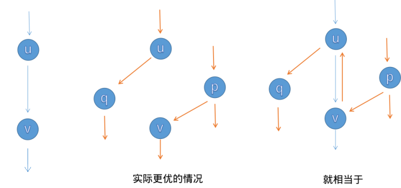
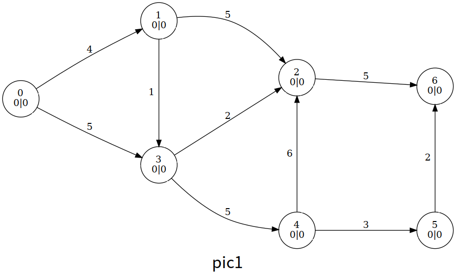
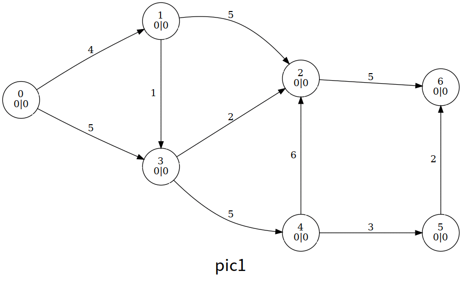
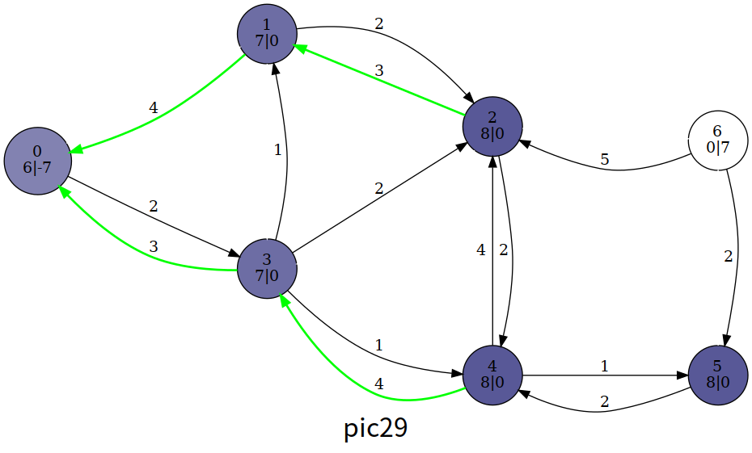
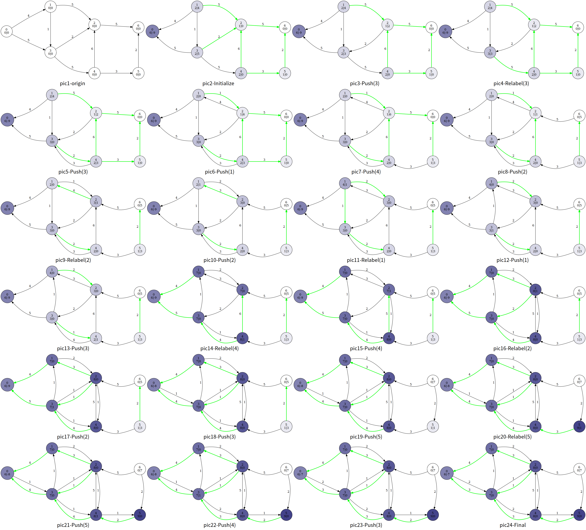

OI Wiki · prijevod · Teorija grafovaOI Wiki · translation · Graph theory
Maksimalni tokMaximum flow
Sadržaj
Ova stranica uglavnom opisuje algoritme vezane uz problem maksimalnog toka.
Pregled
Za osnovne pojmove o tokovima vidi Uvod u tokove u mrežama.
Neka je \(G=(V,E)\) mreža s izvorom i ponorom; želimo na \(G\) odrediti prikladan tok \(f\) koji maksimizira ukupni tok mreže \(|f|\) (tj. \(\sum_{x \in V} f(s, x) - \sum_{x \in V} f(x, s)\)). Taj se problem zove problem maksimalnog toka (maximum flow problem).
Ford–Fulkersonovo povećanje
Ford–Fulkersonovo povećanje zajednički je naziv za klasu algoritama za računanje maksimalnog toka. Metoda koristi greedy ideju: traženjem povećavajućih putova ažurira tok i izračunava maksimalni tok.
Pregled
Za mrežu \(G\) i tok \(f\) na \(G\) definiramo sljedeće.
Za brid \((u, v)\) razliku kapaciteta i toka zovemo rezidualni kapacitet \(c_f(u,v)\) (residual capacity), tj. \(c_f(u,v)=c(u,v)-f(u,v)\).
Podgraf grafa \(G\) koji čine svi vrhovi i bridovi s rezidualnim kapacitetom većim od \(0\) zovemo rezidualna mreža \(G_f\) (residual network), tj. \(G_f=(V,E_f)\), gdje je \(E_f=\left\{(u,v) \mid c_f(u,v)>0\right\}\).
Upozorenje
Kao što ćemo odmah spomenuti, tok može biti negativan, pa bridovi iz \(E_f\) ne moraju biti u \(E\). Nakon uvođenja pojma povećanja to ćemo u nastavku konkretno objasniti.
Put od izvora \(s\) do ponora \(t\) u \(G_f\) zovemo povećavajući put (augmenting path). Za povećavajući put svakom bridu \((u, v)\) dodamo jednaku količinu toka kako bi se ukupni tok mreže povećao; taj postupak zovemo povećanje (augment). Stoga se računanje maksimalnog toka može promatrati kao superpozicija tokova dobivenih u nizu povećanja.
Osim toga, tijekom Ford–Fulkersonova povećanja za svaki brid \((u, v)\) stvaramo i obrnuti brid \((v, u)\). Dogovorno vrijedi \(f(u, v) = -f(v, u)\); to se svojstvo osigurava uvođenjem operacije poništavanja toka pri svakom povećanju, tj. kad \(f(u, v)\) raste, \(f(v, u)\) treba pasti za isti iznos.
Savjet
U implementacijama algoritama za maksimalni tok često trebamo brz pristup obrnutom bridu. U matrici susjedstva ta je operacija trivijalna (\(g_{u, v} \leftrightarrow g_{v, u}\)). No uobičajena implementacija je bolja lista susjedstva s lančanim bridovima (chained forward star). Česta je tehnika da bridove numeriramo od parnog broja (obično \(0\)) i pri dodavanju brida odmah dodamo i njegov obrnuti brid tako da su im indeksi susjedni. Tako brid s indeksom \(i\) i brid s indeksom \(i \oplus 1\) uvijek ostaju međusobno obrnuti.
Čitatelji koji se prvi put susreću s ovom metodom mogu primijetiti protuintuitivnu situaciju: tok obrnutog brida \(f(v, u)\) može biti negativan. Zapravo, tijekom Ford–Fulkersonova povećanja važan je samo rezidualni kapacitet \(c_f\), a apsolutna vrijednost \(f(v, u)\) nije bitna; smanjenje toka obrnutog brida možemo gledati kao povećanje rezidualnog kapaciteta obrnutog brida \(c_f(v, u)\), što se slaže sa smislom poništavanja toka: povećanje rezidualnog kapaciteta obrnutog brida znači da kasnije prolaskom obrnutim bridom možemo poništiti ranije povećanje u smjeru naprijed, što predstavlja svojevrsno „kajanje”.
Sljedeći primjer može pomoći u razumijevanju postupka. Neka je \(G\) mreža s jediničnim kapacitetima; promotrimo sljedeći postupak:
- Na \(G\) postoji više povećavajućih putova; odaberemo povećanje koje redom prolazi kroz \(u, v\) (kao na lijevoj slici) i tok se poveća za \(1\).
- Primjećujemo da bi, kad bismo izveli povećanje sa srednje slike, lokalni maksimalni tok bio \(2\), a ne \(1\). No kako su brid koji ulazi u \(u\) i brid koji izlazi iz \(v\) u prvom povećanju iscrpili kapacitet, povećanje sa srednje slike sad ne možemo izvesti. To znači da trenutni tok nije dovoljno dobar, ali lokalno možda više nema drugih povećavajućih putova (koji prolaze samo bridovima izvornog grafa, bez obrnutih bridova).
- Sada uvedimo poništavanje toka. Nakon prvog povećanja poništavanje znači da se \(c_f(v, u)\) povećao za \(1\) rezidualnog kapaciteta, što je kao da je dodan brid \((v, u)\), pa možemo izvesti još jedno povećanje koje redom prolazi kroz \(p, v, u, q\) (narančasti put na desnoj slici). Tok na neusmjerenom bridu \((u, v)\) u dva se povećanja poništava i iznenađeno otkrivamo da je superpozicija dvaju povećanja zapravo ekvivalentna srednjoj slici.

Ovaj nam primjer govori da zbog učinka „poništavanja” koji donosi operacija poništavanja toka ne moramo brinuti jesmo li povećavajuće putove birali „pogrešnim” redoslijedom.
Lako se vidi: dok god na \(G_f\) postoji povećavajući put, povećanjem duž njega ukupni tok raste; inače je ukupni tok dosegnuo najveću moguću vrijednost i postupak je gotov. To je postupak Ford–Fulkersonova povećanja.
Teorem o maksimalnom toku i minimalnom rezu
Otprilike smo shvatili ideju Ford–Fulkersonova povećanja, ali kako dokazati ispravnost te metode? Zašto je tok \(f\) nakon završetka povećanja maksimalni tok?
Zapravo, ispravnost Ford–Fulkersonova povećanja ekvivalentna je teoremu o maksimalnom toku i minimalnom rezu (max-flow min-cut theorem). Teorem kaže da za svaku mrežu \(G = (V, E)\) maksimalni tok \(f\) i minimalni rez \(\{S, T\}\) uvijek zadovoljavaju \(|f| = ||S, T||\).
Za dokaz teorema krenimo od leme: za mrežu \(G = (V, E)\), za bilo koji tok \(f\) i bilo koji rez \(\{S, T\}\) uvijek vrijedi \(|f| \leq ||S, T||\), pri čemu jednakost vrijedi ako i samo ako su svi bridovi iz \(\{(u, v) | u \in S, v \in T\}\) zasićeni, a svi bridovi iz \(\{(u, v) | u \in T, v \in S\}\) prazni.
Dokaz
Da bi vrijedila jednakost, prva nejednakost zahtijeva da su svi bridovi iz \(\{(u, v) \mid u \in T, v \in S\}\) prazni, a druga da su svi bridovi iz \(\{(u, v) \mid u \in S, v \in T\}\) zasićeni. Time je lema dokazana.
Može li se, dakle, za svaku mrežu uvjet jednakosti uvijek postići? Ako je odgovor potvrdan, teorem o maksimalnom toku i minimalnom rezu je dokazan. Pokušajmo to dokazati.
Dokaz
Pretpostavimo da smo nakon neke runde povećanja dobili tok \(f\) takav da na \(G_f\) nema povećavajućeg puta, tj. na \(G_f\) nema puta od \(s\) do \(t\). Označimo sa \(S\) skup vrhova dostupnih iz \(s\) i neka je \(T = V \setminus S\).
Očito je \(\{S, T\}\) rez grafa \(G_f\) i \(||S, T|| = \sum_{u \in S} \sum_{v \in T} c_f(u, v) = 0\). Budući da su rezidualni kapaciteti nenegativni, to znači da za sve \(u \in S, v \in T, (u, v) \in E_f\) vrijedi \(c_f(u, v) = 0\). Te bridove dijelimo na dva slučaja: bridove koji postoje u izvornom grafu i obrnute bridove:
- \((u, v) \in E\): tada je \(c_f(u, v) = c(u, v) - f(u, v) = 0\), pa je \(c(u, v) = f(u, v)\), tj. svi bridovi iz \(\{(u, v) \mid u \in S, v \in T\}\) su zasićeni;
- \((v, u) \in E\): tada je \(c_f(u, v) = c(u, v) - f(u, v) = 0 - f(u, v) = f(v, u) = 0\), tj. svi bridovi iz \(\{(v, u) \mid u \in S, v \in T\}\) su prazni.
Dakle, nakon zaustavljanja povećanja tok \(f\) zadovoljava uvjet jednakosti. Prema odnosu veličina iz leme, \(f\) je prirodno maksimalni tok grafa \(G\), a \(\{S, T\}\) minimalni rez grafa \(G\).
Lako se vidi da je Kőnigov teorem poseban slučaj teorema o maksimalnom toku i minimalnom rezu. Zapravo su oba povezana s dualnošću u linearnom programiranju.
Analiza vremenske složenosti
Na mreži \(G = (V, E)\) s cjelobrojnim tokovima trivijalno pretpostavljamo da je tok svakog povećanja cijeli broj; tada je jedna gornja granica vremenske složenosti Ford–Fulkersonova povećanja \(O(|E||f|)\), gdje je \(f\) maksimalni tok na \(G\). Naime, složenost jedne runde povećanja je \(O(|E|)\), a povećanje povećava ukupni tok, pa broj rundi ne može premašiti \(|f|\).
Različite implementacije Ford–Fulkersonova povećanja imaju različite složenosti. Među uobičajenijima su algoritmi Edmonds–Karp, Dinic, SAP, ISAP itd., koje ćemo redom predstaviti u nastavku.
Edmonds–Karpov algoritam
Ideja algoritma
Kako tražiti povećavajući put u \(G_f\)? Kad razmatramo konkretnu implementaciju Ford–Fulkersonova povećanja, najprirodniji je izbor BFS. Tada Ford–Fulkersonovo povećanje postaje Edmonds–Karpov algoritam. Konkretan postupak je sljedeći:
-
Ako na \(G_f\) BFS-om iz \(s\) možemo doći do \(t\), našli smo novi povećavajući put.
-
Za povećavajući put \(p\) izračunamo najmanji rezidualni kapacitet bridova kroz koje \(p\) prolazi, \(\Delta = \min_{(u, v) \in p} c_f(u, v)\). Svakom bridu na \(p\) dodamo \(\Delta\) toka, a njihovim obrnutim bridovima oduzmemo \(\Delta\) toka, pa maksimalni tok raste za \(\Delta\).
-
Budući da smo promijenili tok, dobivamo novi \(G_f\); na novom \(G_f\) ponavljamo postupak dok povećavajući put ne prestane postojati, nakon čega tok više ne raste.
Opisani algoritam je Edmonds–Karpov algoritam.
Analiza vremenske složenosti
Pokušajmo analizirati vremensku složenost Edmonds–Karpova algoritma.
Očito je složenost jedne runde BFS povećanja \(O(|E|)\).
Gornja granica ukupnog broja rundi povećanja je \(O(|V||E|)\). Ta se tvrdnja u internetskim izvorima često lažno dokazuje (ili neodređeno preskače). U nastavku pokušavamo dati formalniji dokaz1.
Dokaz gornje granice ukupnog broja rundi povećanja
Najprije uvodimo lemu — lemu o nepadanju najkraćeg puta. Konkretno, označimo s \(d_f(u)\) udaljenost (tj. duljinu najkraćeg puta, i dalje u tekstu) vrha \(u\) od izvora \(s\) na \(G_f\). Za neku rundu povećanja neka \(f\) i \(f'\) označavaju tok prije odnosno poslije povećanja; tvrdimo da za svaki vrh \(u\) povećanje uvijek daje \(d_{f'}(u) \geq d_f(u)\). Tu lemu dokazat ćemo malo kasnije.
Nazovimo brid s najmanjim rezidualnim kapacitetom na povećavajućem putu zasićenim bridom (ako ih je više najmanjih, uzmemo bilo koji). Ako je usmjereni brid \((u, v)\) odabran kao zasićeni brid, povećanje mu ispražnjava rezidualni kapacitet pa zasićeni brid nestaje, a poništavanje toka stvara novi obrnuti brid (ako prije nije postojao), tj. \((u, v) \not \in E_{f'}\) i \((v, u) \in E_{f'}\). Iz ove analize znamo da se za neusmjereni brid \((u, v)\) dva smjera povećanja uvijek izmjenjuju.
Pri povećanju duž \((u, v)\) na \(G_f\) vrijedi \(d_f(u) + 1 = d_f(v)\), a nakon toga rezidualna mreža postaje \(G_{f'}\). Pri povećanju duž \((v, u)\) na \(G_{f'}\) vrijedi \(d_{f'}(v) + 1 = d_{f'}(u)\). Prema lemi o nepadanju najkraćeg puta još je \(d_{f'}(v) \geq d_f(v)\); povezivanjem svih izraza dobivamo \(d_{f'}(u) \geq d_{f}(u) + 2\). Drugim riječima, ako je usmjereni brid \((u, v)\) odabran kao zasićeni brid, udaljenost od \(u\) do \(s\) veća je barem za \(2\) u odnosu na prethodni put kad je bio odabran kao zasićeni brid.
Udaljenost od \(s\) do bilo kojeg vrha ne može premašiti \(|V|\); u kombinaciji s gornjim svojstvom vidimo da je broj puta koliko je svaki brid odabran kao zasićeni brid \(O(|V|)\), a množenjem brojem bridova dobivamo gornju granicu ukupnog broja rundi povećanja \(O(|V||E|)\).
Zatim dokazujemo lemu o nepadanju najkraćeg puta, tj. \(d_{f'}(u) \geq d_f(u)\). Dokaz nije težak, ali može biti pomalo zamršen; čitatelj može zastati i pažljivo razmisliti.
Dokaz leme o nepadanju najkraćeg puta
Dokazujemo kontradikcijom. Za neku rundu povećanja pretpostavimo da postoje vrhovi čija se udaljenost do \(s\) nakon te runde smanjila u odnosu na stanje prije povećanja. Označimo s \(v\) onaj od njih s najmanjom udaljenošću do \(s\) (tj. \(v = \arg \min_{x \in V, d_{f'}(x) < d_f(x)} d_{f'}(x)\)). Uočimo da je prema pretpostavci kontradikcije \(d_{f'}(v) < d_f(v)\) poznato.
Na najkraćem putu od \(s\) do \(v\) u \(G_{f'}\) označimo s \(u\) prethodnik vrha \(v\), tj. \(d_{f'}(u) + 1 = d_{f'}(v)\).
Da \(u\) ne bi narušio svojstvo „najmanje udaljenosti” vrha \(v\), mora vrijediti \(d_{f'}(u) \geq d_f(u)\).
Dodavanjem iste vrijednosti objema stranama dobivamo \(d_{f'}(v) \geq d_f(u) + 1\). Ocjenom prema pretpostavci kontradikcije dobivamo \(d_f(v) > d_f(u) + 1\).
Razmotrimo sada smjer povećanja na \((u, v)\).
- Pretpostavimo da je usmjereni brid \((u, v) \in E_f\). Prema svojstvu „pretrage u širinu” BFS-a vrijedi \(d_f(u) + 1 \geq d_f(v)\). To je u sukobu s rezultatom ocjene, što je kontradikcija.
- Pretpostavimo da usmjereni brid \((u, v) \not \in E_f\). Prema definiciji \(u\) znamo da \((u, v) \in E_{f'}\), pa postojanje tog brida mora biti rezultat toga da je povećanje u ovoj rundi prošlo kroz \((v, u)\) i poništavanjem stvorilo obrnuti brid, tj. \(d_f(v) + 1 = d_f(u)\). To je u sukobu s rezultatom ocjene, što je kontradikcija.
Budući da povećanje duž \((u, v)\) u bilo kojem smjeru vodi u kontradikciju, pretpostavka kontradikcije ne vrijedi i lema o nepadanju najkraćeg puta je dokazana.
Množenjem složenosti jedne runde BFS povećanja s gornjom granicom broja rundi dobivamo da je vremenska složenost Edmonds–Karpova algoritma \(O(|V||E|^2)\).
Implementacija
Moguća implementacija Edmonds–Karpova algoritma izgleda ovako.
Referentni kod
constexpr int MAXN = 250;
constexpr int INF = 0x3f3f3f3f;
struct Edge {
int from, to, cap, flow;
Edge(int u, int v, int c, int f) : from(u), to(v), cap(c), flow(f) {}
};
struct EK {
int n, m; // n: broj vrhova, m: broj bridova
vector<Edge> edges; // edges: skup svih bridova
vector<int> G[MAXN]; // G: vrh x -> indeksi svih bridova iz x u edges
int a[MAXN], p[MAXN]; // a: vrh x -> najveći tok koji vrhu x daje brid kojim smo mu zadnje prišli u BFS-u
// p: vrh x -> brid kojim smo vrhu x zadnje prišli u BFS-u
void init(int n) {
for (int i = 0; i < n; i++) G[i].clear();
edges.clear();
}
void AddEdge(int from, int to, int cap) {
edges.push_back(Edge(from, to, cap, 0));
edges.push_back(Edge(to, from, 0, 0));
m = edges.size();
G[from].push_back(m - 2);
G[to].push_back(m - 1);
}
int Maxflow(int s, int t) {
int flow = 0;
for (;;) {
memset(a, 0, sizeof(a));
queue<int> Q;
Q.push(s);
a[s] = INF;
while (!Q.empty()) {
int x = Q.front();
Q.pop();
for (int i = 0; i < G[x].size(); i++) { // prođi bridove s početkom u x
Edge& e = edges[G[x][i]];
if (!a[e.to] && e.cap > e.flow) {
p[e.to] = G[x][i]; // G[x][i] je brid kojim smo zadnje prišli vrhu e.to
a[e.to] =
min(a[x], e.cap - e.flow); // tok koji vrhu e.to daje brid kojim smo mu zadnje prišli
Q.push(e.to);
}
}
if (a[t]) break; // ako je ponor primio tok, prekini BFS
}
if (!a[t])
break; // ako ponor nije primio tok, izvor i ponor nisu u istoj komponenti povezanosti
for (int u = t; u != s;
u = edges[p[u]].from) { // preko u slijedi put s -> t iz BFS-a
edges[p[u]].flow += a[t]; // povećaj flow bridova na putu
edges[p[u] ^ 1].flow -= a[t]; // smanji flow obrnutih bridova
}
flow += a[t];
}
return flow;
}
};
Dinicov algoritam
Ideja algoritma
Razmotrimo da prije povećanja BFS-om razdijelimo \(G_f\) na slojeve, tj. vrhove podijelimo u slojeve prema udaljenosti \(d(u)\) vrha \(u\) od izvora \(s\). Zahtijevamo da tok kroz \(u\) smije teći samo u vrhove \(v\) sljedećeg sloja, tj. brišemo izlazne bridove iz \(u\) prema vrhovima s jednakom ili manjom oznakom sloja; ostatak grafa \(G_f\) zovemo slojeviti graf (level graph). Formalno, \(G_L = (V, E_L)\) je slojeviti graf grafa \(G_f = (V, E_f)\), gdje je \(E_L = \left\{ (u, v) \mid (u, v) \in E_f, d(u) + 1 = d(v) \right\}\).
Ako na slojevitom grafu \(G_L\) nađemo maksimalan (po inkluziji) povećavajući tok \(f_b\) takav da ga samo unutar \(G_L\) nije moguće dalje povećati, \(f_b\) zovemo blokirajući tok (blocking flow) grafa \(G_L\).
Upozorenje
Iako smo gore povećanje/povećavajući tok definirali samo na jednom povećavajućem putu, u širem smislu riječ „povećanje” ne odnosi se samo na povećavajući tok na jednom putu, nego i na uniju više povećavajućih tokova — upravo u tom smislu definiramo blokirajući tok.
Nakon definicije slojevitog grafa i blokirajućeg toka, postupak Dinicova algoritma je sljedeći.
- Na \(G_f\) BFS-om izgradimo slojeviti graf \(G_L\).
- Na \(G_L\) DFS-om nađemo blokirajući tok \(f_b\).
- Spojimo \(f_b\) s dosadašnjim tokom \(f\), tj. \(f \leftarrow f + f_b\).
- Ponavljamo postupak dok ne prestane postojati put od \(s\) do \(t\).
Tada je \(f\) maksimalni tok.
Prije analize složenosti ovog algoritma moramo posebno objasniti postupak „na \(G_L\) DFS-om nađemo blokirajući tok \(f_b\)”. Iako bi BFS za slojeviti graf čitateljima ove stranice trebao biti trivijalan, DFS za blokirajući tok traži malo vještine — moramo uvesti optimizaciju trenutnog luka (current arc).
Uočimo da tijekom DFS-a na \(G_L\), ako vrh \(u\) ima mnogo ulaznih i izlaznih bridova i pri svakom primanju toka iz ulaznog brida prolazi cijeli popis izlaznih bridova da odluči kojem izlaznom bridu proslijediti tok, lokalna složenost u \(u\) u najgorem slučaju doseže \(O(|E|^2)\). Da bismo to izbjegli: ako u nekom trenutku već znamo da je brid \((u, v)\) povećan do kraja (brid \((u, v)\) više nema rezidualnog kapaciteta ili je dio iza \(v\) povećan do blokade), tok iz \(u\) više nema smisla pokušavati slati izlaznim bridom \((u, v)\). Stoga za svaki vrh \(u\) održavamo prvi izlazni brid u popisu izlaznih bridova od \(u\) koji još ima smisla pokušati. Po običaju taj pokazivač zovemo trenutni luk, a postupak optimizacija trenutnog luka.
Višestruko povećanje
Višestruko povećanje konstantna je optimizacija Dinicova algoritma: ako smo na slojevitom grafu našli povećavajući put \(p\) od \(s\) do \(t\), ne moramo nužno sljedeći povećavajući put tražiti iznova od \(s\), nego možemo krenuti od posljednjeg mjesta na \(p\) koje još ima rezidualnog kapaciteta i potražiti ogranak za povećanje. S obzirom na podudarnost s oblikom povratnog hoda (backtracking), ova je optimizacija u DFS implementaciji prirodna.
Česta zabluda
Vjerojatno zbog pogrešnih formulacija u brojnim internetskim izvorima koje se prenose dalje, mnogi natjecatelji vole optimizaciju trenutnog luka i višestruko povećanje zajedno nazivati dvjema optimizacijama Dinicova algoritma. Zapravo je optimizacija trenutnog luka dio koji jamči ispravnost složenosti Dinicova algoritma, a višestruko povećanje tek konstantna optimizacija koja ne utječe na složenost.
Analiza vremenske složenosti
Uz optimizaciju trenutnog luka analiza složenosti Dinicova algoritma je sljedeća.
Najprije pokušajmo dokazati da je složenost DFS-a za blokirajući tok u jednoj rundi povećanja \(O(|V||E|)\).
Dokaz vremenske složenosti jedne runde povećanja
Promotrimo svaki povećavajući put u blokirajućem toku \(f_b\); svi su dobiveni skakanjem duž trenutnog luka na \(G_L\), pri čemu broj skokova svakog povećavajućeg puta ne može premašiti \(|V|\).
Svakim pronađenim povećavajućim putem nestaje jedan zasićeni brid (rezidualni kapacitet pada na nulu). Za sve povećavajuće putove u blokirajućem toku \(f_b\), skup zasićenih bridova koje oni ispražnjavaju označimo \(E_1\). S obzirom na slojevitost \(G_L\), nakon nestanka zasićenog brida njegov obrnuti brid ne može u istoj rundi povećanja proći drugi povećavajući put, pa je \(E_1\) podskup od \(E_L\).
Nadalje, za slučajeve u kojima smo skakali duž trenutnog luka, ali zbog blokade na nekom mjestu nismo uspjeli dobiti povećavajući put, skup posljednjih bridova tih nepotpunih putova označimo \(E_2\). Članovi \(E_2\) nisu zasićeni, pa su \(E_1\) i \(E_2\) disjunktni, a \(E_1 \cup E_2\) i dalje je podskup od \(E_L\).
Budući da nijedan član \(E_1 \cup E_2\) nije potrošio više od \(|V|\) skokova (a uz optimizaciju višestrukog povećanja neki se skokovi broje višestruko), zaključno, ukupni broj skokova tijekom DFS-a ne može premašiti \(|V||E_L|\).
Jedan čest lažni dokaz
Za svaki vrh održavamo sljedeći brid kojim se može povećavati, a trenutni luk mijenja se najviše \(|E|\) puta, pa je najgora složenost jedne runde povećanja \(O(|V||E|)\).
Greška
Iz „trenutni luk mijenja se najviše \(|E|\) puta” ne slijedi „svaki vrh posjećuje svoje izlazne bridove najviše \(|E|\) puta”. Naime, posjet trenutnom luku ne iscrpljuje nužno njegov rezidualni kapacitet, pa vrh \(u\) može isti trenutni luk posjetiti više puta.
Uočimo da broj slojeva slojevitog grafa očito ne može premašiti \(|V|\); ako dokažemo da broj slojeva tijekom povećanja strogo raste, broj rundi povećanja Dinicova algoritma je \(O(|V|)\). Pokušajmo to dokazati2.
Dokaz monotonosti broja slojeva slojevitog grafa
Moramo uvesti pojam iz algoritama tipa push-relabel (druge klase algoritama za maksimalni tok): visinsku oznaku. Da bismo dokaz lakše izrazili visinskim oznakama, u dokazu neka je \(d_f(u)\) udaljenost vrha \(u\) do ponora \(t\) na \(G_f\) i slojeve gradimo od ponora, a ne od izvora (u tome nema bitne razlike). Za neku rundu povećanja neka \(f\) i \(f'\) označavaju tok prije odnosno poslije povećanja. Nakon računanja i dodavanja blokirajućeg toka u toj rundi neka se slojeviti graf promijeni iz \(G_L = (V, E_L)\) u \(G'_{L} = (V, E'_L)\).
Dajemo nestrogu privremenu definiciju visinske oznake: na mreži \(G = (V, E)\) neka je \(h\) funkcija sa skupa vrhova \(V\) u skup cijelih brojeva \(N\); \(h\) je valjana visinska oznaka na \(G\) ako i samo ako \(h(u) \leq h(v) + 1\) vrijedi za sve \((u, v) \in E\).
Promotrimo sve članove \((u, v)\) skupa \(E_{f'}\); uočavamo da je razlog za \((u, v) \in E_{f'}\) jedan od sljedeća dva.
- \((u, v) \in E_f\) i rezidualni kapacitet nije iscrpljen tijekom te runde povećanja — prema definiciji najkraćeg puta tada je \(d_f(u) \leq d_f(v) + 1\);
- \((u, v) \not \in E_f\), ali je u toj rundi blokirajući tok prošao kroz \((v, u)\) i poništavanjem stvorio obrnuti brid — prema definiciji slojevitog grafa i blokirajućeg toka tada je \(d_f(u) + 1 = d_f(v)\).
Iz tog zapažanja zaključujemo: \(d_f\) je valjana visinska oznaka na \(G_{f'}\). Naravno, i na podgrafu \(G'_L\) grafa \(G_{f'}\).
Sada, za povećavajući put \(p = (s, \dots, u, v, \dots, t)\) na \(G'_L\), razmotrimo postupak u kojem od praznog puta dodajemo po jedan vrh obrnutim redoslijedom vrhova na \(p\) (od \(t\) prema \(s\)). Pretpostavimo da je vrh \(v\) već dodan, a vrh \(u\) upravo dodajemo; uočavamo da se nakon dodavanja vrha \(u\), prema definiciji slojevitog grafa, vrijednost \(d_{f'}(u)\) u odnosu na \(d_{f'}(v)\) poveća za \(1\); istodobno, budući da je \(d_f\) visinska oznaka na \(G'_L\), vrijednost \(d_f(u)\) u odnosu na \(d_f(v)\) može se povećati za \(1\), ostati ista ili se smanjiti. Stoga nakon dodavanja cijelog puta dobivamo \(d_{f'}(s) \geq d_f(s)\), pri čemu jednakost vrijedi ako i samo ako \(d_f(u) = d_f(v) + 1\) vrijedi za sve \((u, v) \in p\). Ako jednakost ne može nastupiti, vrijedi \(d_{f'}(s) > d_f(s)\) — upravo željeni zaključak „broj slojeva slojevitog grafa tijekom povećanja strogo raste”. Pokušajmo dokazati da jednakost ne može nastupiti.
Dokazujemo kontradikcijom: pretpostavimo da vrijedi \(d_{f'}(s) = d_f(s)\) i pokušajmo izvesti kontradikciju. Tvrdimo da na \(G'_L\) put \(p\) sadrži barem jedan brid \((u, v)\) koji ne postoji na \(G_L\). Kad takvog brida ne bi bilo, s obzirom na \(d_f(s) = d_{f'}(s)\) i definicije slojevitog grafa i blokirajućeg toka, povećanje na \(G_L\) ne bi još bilo dovršeno. Da bi se izbjegla ta kontradikcija, naša tvrdnja mora biti točna.
Neka je \((u, v)\) brid koji zadovoljava tvrdnju; razlog može biti samo jedan od sljedeća dva.
- \((u, v) \in E_f\), ali u \(d_f(u) \leq d_f(v) + 1\) ne vrijedi jednakost, pa prema definiciji slojevitog grafa \((u, v) \not \in E_L\), a nakon povećanja u novom slojevanju dodan je u \(E'_L\);
- \((u, v) \not \in E_f\), što znači da je brid \((u, v)\) nastao tako što je blokirajući tok u ovoj rundi prošao kroz \((v, u)\) i poništavanjem stvorio obrnuti brid, tj. \(d_f(u) = d_f(v) - 1\).
Budući da u oba slučaja u kojima tvrdnja vrijedi dobivamo \(d_f(u) \neq d_f(v) + 1\), tj. nužan i dovoljan uvjet za jednakost u \(d_{f'}(s) \geq d_f(s)\) ne može biti ispunjen, to je u sukobu s pretpostavkom \(d_{f'}(s) = d_f(s)\) i tvrdnja je dokazana.
Još jedan čest lažni dokaz
Dokazujemo kontradikcijom. Pretpostavimo da je nakon jedne runde povećanja broj slojeva slojevitog grafa jednak prijašnjem; tada bi na slojevitom grafu još postojao barem jedan povećavajući put od \(s\) do \(t\) u kojem je razlika slojeva susjednih vrhova \(1\). To što taj put nije povećan znači da runda povećanja nije završila. Da se izbjegne ta kontradikcija, tvrdnja vrijedi.
Greška
Iz „najkraći \(s\)-\(t\) put na novom slojevitom grafu nakon runde povećanja jednak je prijašnjem” ne slijedi „runda povećanja na starom slojevitom grafu nije završila”. Naime, nema razloga da skupovi bridova dvaju slojevitih grafova budu jednaki; najkraći \(s\)-\(t\) put na novom slojevitom grafu može prolaziti bridovima koji na starom nisu postojali.
Množenjem složenosti jedne runde povećanja \(O(|V||E|)\) s brojem rundi \(O(|V|)\) dobivamo da je vremenska složenost Dinicova algoritma \(O(|V|^2|E|)\).
Da bi stvarno vrijeme izvođenja Dinicova algoritma bilo blizu teorijske gornje granice, kao ulaz treba konstruirati mreže s posebnim svojstvima. Budući da se u natjecateljskoj praksi provjera znanja o tokovima često usredotočuje na tehniku modeliranja izvornog problema kao problema toka, naši modeli obično nemaju posebna svojstva zbog kojih bi Dinicov algoritam bio spor; naprotiv, Dinicov je algoritam na većini grafova vrlo učinkovit. Zato su ograničenja u zadacima s tokovima obično velika i način „uvrsti \(|V|, |E|\) u \(|V|^2|E|\) da procijeniš vrijeme” nije primjenjiv. Za točnu procjenu natjecatelju treba iskustvo s praktičnom učinkovitošću Dinicova algoritma; čitatelj može više vježbati.
Analiza vremenske složenosti u posebnim slučajevima
Na nekim grafovima s dobrim svojstvima Dinicov algoritam ima bolju složenost.
Za mrežu \(G = (V, E)\), ako su kapaciteti svih bridova \(1\), tj. \(c(u, v) \in \{0, 1\}\) za sve \((u, v) \in E\), kažemo da je \(G\) mreža jediničnih kapaciteta (unit capacity).
U mreži jediničnih kapaciteta složenost jedne runde povećanja Dinicova algoritma je \(O(|E|)\).
Dokaz
Naime, svako povećanje čini sve bridove na povećavajućem putu zasićenima pa oni nestaju; stoga se u jednoj rundi svaki brid može povećati samo jednom.
U mreži jediničnih kapaciteta broj rundi povećanja Dinicova algoritma je \(O(|E|^{\frac{1}{2}})\).
Dokaz
Slojeve gradimo oko izvora \(s\); neka je \(d_f(u)\) udaljenost vrha \(u\) do izvora \(s\) na \(G_f\). Nadalje, skup vrhova \(\left\{u \mid u \in V, d_f(u) = k \right\}\) definiramo kao sloj \(D_k\) s indeksom \(k\) i označimo \(S_k = \cup_{i \leq k} D_i\).
Pretpostavimo da smo već izveli \(|E|^{\frac{1}{2}}\) rundi povećanja. Prema Dirichletovu principu postoji barem jedan \(k\) za koji skup bridova \(\left\{ (u, v) \mid u \in D_k, v \in D_{k+1}, (u, v) \in E_f \right\}\) nema više od \(\frac {|E|} {|E|^{\frac{1}{2}}} \approx |E|^{\frac{1}{2}}\) članova. Očito je \(\{S_k, V - S_k\}\) \(s\)-\(t\) rez na \(G_f\) kapaciteta najviše \(|E|^{\frac{1}{2}}\). Prema teoremu o maksimalnom toku i minimalnom rezu maksimalni tok na \(G_f\) nije veći od \(|E|^{\frac{1}{2}}\), tj. na \(G_f\) se može izvesti još najviše \(|E|^{\frac{1}{2}}\) rundi povećanja. Stoga je ukupan broj rundi \(O(|E|^{\frac{1}{2}})\).
U mreži jediničnih kapaciteta broj rundi povećanja Dinicova algoritma je \(O(|V|^{\frac{2}{3}})\).
Dokaz
Pretpostavimo da smo već izveli \(2 |V|^{\frac{2}{3}}\) rundi povećanja. Budući da najviše polovica slojeva (\(|V|^{\frac{2}{3}}\) njih) sadrži više od \(|V|^{\frac{1}{3}}\) vrhova, bez obzira na raspodjelu veličina slojeva postoji barem jedan \(k\) za koji dva susjedna sloja oba sadrže najviše \(|V|^{\frac{1}{3}}\) vrhova, tj. \(|D_k| \leq |V|^{\frac{1}{3}}\) i \(|D_{k+1}| \leq |V|^{\frac{1}{3}}\).
Da bismo maksimizirali broj bridova između \(D_k\) i \(D_{k+1}\), pretpostavimo da tvore potpun bipartitan graf; tada skup bridova \(\left\{ (u, v) \mid u \in D_k, v \in D_{k+1}, (u, v) \in E_f \right\}\) nema više od \(|V|^{\frac{2}{3}}\) članova. Očito je \(\{S_k, V - S_k\}\) \(s\)-\(t\) rez na \(G_f\) kapaciteta najviše \(|V|^{\frac{2}{3}}\). Prema teoremu o maksimalnom toku i minimalnom rezu maksimalni tok na \(G_f\) nije veći od \(|V|^{\frac{2}{3}}\), tj. na \(G_f\) se može izvesti još najviše \(|V|^{\frac{2}{3}}\) rundi povećanja. Stoga je ukupan broj rundi \(O(|V|^{\frac{2}{3}})\).
U mreži jediničnih kapaciteta, ako za svaki vrh \(u\) osim izvora i ponora vrijedi \(\mathit{deg}_{\mathit{in}}(u) = 1\) ili \(\mathit{deg}_{\mathit{out}}(u) = 1\), broj rundi povećanja Dinicova algoritma je \(O(|V|^{\frac{1}{2}})\). Pritom \(\mathit{deg}_{\mathit{in}}(u)\) i \(\mathit{deg}_{\mathit{out}}(u)\) označavaju ulazni odnosno izlazni stupanj vrha \(u\).
Dokaz
Uvodimo lemu: za mrežu ovog oblika svaki se tok na njoj može rastaviti na nekoliko vršno disjunktnih povećavajućih putova jediničnog toka.
Pretpostavimo da smo već izveli \(|V|^{\frac{1}{2}}\) rundi povećanja. Prema definiciji slojevitog grafa duljina svakog novog povećavajućeg puta tada je barem \(|V|^{\frac{1}{2}}\).
Promotrimo rastav maksimalnog toka na \(G_f\) na povećavajuće putove; broj dobivenih putova ne može biti veći od \(\frac {|V|} {|V|^{\frac{1}{2}}} \approx |V|^{\frac{1}{2}}\), što znači da se na \(G_f\) može izvesti još najviše \(|V|^{\frac{1}{2}}\) rundi povećanja. Stoga je ukupan broj rundi \(O(|V|^{\frac{1}{2}})\).
Zaključno, izvodimo neke posljedice.
- Na mreži jediničnih kapaciteta ukupna složenost Dinicova algoritma je \(O(|E| \min(|E|^\frac{1}{2}, |V|^{\frac{2}{3}}))\).
- Na mreži jediničnih kapaciteta, ako za svaki vrh \(u\) osim izvora i ponora vrijedi \(\mathit{deg}_{\mathit{in}}(u) = 1\) ili \(\mathit{deg}_{\mathit{out}}(u) = 1\), ukupna složenost Dinicova algoritma je \(O(|E||V|^{\frac{1}{2}})\). Za problem najvećeg sparivanja u bipartitnom grafu često koristimo Hopcroft–Karpov algoritam, koji je zapravo poseban slučaj Dinicova algoritma na mreži jediničnih kapaciteta koja zadovoljava navedeno ograničenje stupnjeva.
Implementacija
Referentni kod
struct MF {
struct edge {
int v, nxt, cap, flow;
} e[N];
int fir[N], cnt = 0;
int n, S, T;
ll maxflow = 0;
int dep[N], cur[N];
void init() {
memset(fir, -1, sizeof fir);
cnt = 0;
}
void addedge(int u, int v, int w) {
e[cnt] = {v, fir[u], w, 0};
fir[u] = cnt++;
e[cnt] = {u, fir[v], 0, 0};
fir[v] = cnt++;
}
bool bfs() {
queue<int> q;
memset(dep, 0, sizeof(int) * (n + 1));
dep[S] = 1;
q.push(S);
while (q.size()) {
int u = q.front();
q.pop();
for (int i = fir[u]; ~i; i = e[i].nxt) {
int v = e[i].v;
if ((!dep[v]) && (e[i].cap > e[i].flow)) {
dep[v] = dep[u] + 1;
q.push(v);
}
}
}
return dep[T];
}
int dfs(int u, int flow) {
if ((u == T) || (!flow)) return flow;
int ret = 0;
for (int& i = cur[u]; ~i; i = e[i].nxt) {
int v = e[i].v, d;
if ((dep[v] == dep[u] + 1) &&
(d = dfs(v, min(flow - ret, e[i].cap - e[i].flow)))) {
ret += d;
e[i].flow += d;
e[i ^ 1].flow -= d;
if (ret == flow) return ret;
}
}
return ret;
}
void dinic() {
while (bfs()) {
memcpy(cur, fir, sizeof(int) * (n + 1));
maxflow += dfs(S, INF);
}
}
} mf;
Algoritam MPM
Algoritam MPM (Malhotra, Pramodh-Kumar i Maheshwari) maksimalni tok dobiva na dva načina: prioritetnim redom zasnovanim na gomili, sa složenošću \(O(n^3\log n)\), ili češćim rješenjem s BFS-om, sa složenošću \(O(n^3)\). Napomena: ovaj se odjeljak bavi samo analizom boljeg i jednostavnijeg algoritma \(O(n^3)\).
Opća struktura algoritma MPM slična je Dinicovu algoritmu; također radi u fazama. U svakoj fazi traži povećavajuće putove u slojevitoj mreži rezidualne mreže od \(G\). Glavna razlika u odnosu na Dinicov algoritam jest način traženja povećavajućih putova: dio algoritma MPM koji traži povećavajuće putove troši samo \(O(n^2)\), što je složenost bolja od Dinicove.
Algoritam MPM razmatra kapacitete vrhova, a ne bridova. Ako u slojevitoj mreži \(L\) kapacitet \(p(v)\) vrha \(v\) definiramo kao manji od njegova ulaznog i izlaznog rezidualnog kapaciteta, vrijedi:
Vrh \(r\) zovemo referentnim vrhom ako i samo ako \(p(r) = \min {p(v)}\). Za referentni vrh \(r\) sigurno možemo tok kroz \(r\) povećati za \(p(r)\) tako da mu kapacitet padne na \(0\). Naime, \(L\) je usmjeren aciklički graf i kapaciteti vrhova u \(L\) iznose barem \(p(r)\), pa sigurno postoji usmjereni put od \(s\) preko \(r\) do \(t\). Tada tok svih bridova na tom putu povećamo za \(p(r)\). Taj je put povećavajući put ove faze. Povećavajući put može se naći BFS-om. Nakon povećanja svi zasićeni bridovi mogu se izbrisati iz \(L\), jer se u ovoj fazi više neće koristiti. Isto tako, mogu se izbrisati svi vrhovi različiti od \(s\) i \(t\) koji nemaju izlaznih ili ulaznih bridova.
Analiza vremenske složenosti
Svaka faza algoritma MPM treba \(O(V^2)\), jer ima najviše \(V\) iteracija (jer se barem odabrani referentni vrh briše), a u svakoj iteraciji brišemo sve bridove kroz koje smo prošli osim najviše \(V\) njih. Zbrajanjem dobivamo \(O(V^2+E)=O(V^2)\). Budući da je ukupni broj faza manji od \(V\), ukupno vrijeme izvođenja algoritma MPM je \(O(V^3)\).
Dokaz da je ukupni broj faza manji od V
Algoritam MPM završava u manje od \(V\) faza. Da bismo to dokazali, moramo najprije dokazati dvije leme.
Lema 1: nakon svake iteracije udaljenost od \(s\) do svakog vrha ne smanjuje se, tj. \(level_{i+1}[v] \ge level_{i}[v]\).
Dokaz: fiksirajmo fazu \(i\) i vrh \(v\). Promotrimo bilo koji najkraći put \(P\) od \(s\) do \(v\) u \(G_{i}^R\). Duljina puta \(P\) jednaka je \(level_{i}[v]\). Uočimo da \(G_{i}^R\) može sadržavati samo unatražne i unaprijedne bridove iz \(G_{i}^R\). Ako \(P\) nema unatražnih bridova iz \(G_{i}^R\), onda \(level_{i+1}[v] \ge level_{i}[v]\), jer je \(P\) i put u \(G_{i}^R\). Pretpostavimo sada da \(P\) ima barem jedan unatražni brid i da je prvi takav \((u,w)\); tada \(level_{i+1}[u] \ge level_{i}[u]\) (zbog prvog slučaja). Brid \((u,w)\) ne pripada \(G_{i}^R\), pa je na \((u,w)\) utjecao povećavajući put prethodne iteracije. To znači \(level_{i}[u] = level_{i}[w]+1\). Osim toga, \(level_{i+1}[w] = level_{i+1}[u]+1\). Iz te dvije jednadžbe i \(level_{i+1}[u] \ge level_{i}[u]\) dobivamo \(level_{i+1}[w] \ge level_{i}[w]+2\). Ista ideja može se primijeniti na ostatak puta.
Lema 2: \(level_{i+1}[t] > level_{i}[t]\).
Dokaz: iz leme 1 dobivamo \(level_{i+1}[t] \ge level_{i}[t]\). Pretpostavimo \(level_{i+1}[t] = level_{i}[t]\); uočimo da \(G_{i}^R\) može sadržavati samo unatražne i unaprijedne bridove iz \(G_{i}^R\). To znači da u \(G_{i}^R\) postoji najkraći put koji nije blokiran povećavajućim putovima. To je kontradikcija.
Implementacija
Referentni kod
struct MPM {
struct FlowEdge {
int v, u;
long long cap, flow;
FlowEdge() {}
FlowEdge(int _v, int _u, long long _cap, long long _flow)
: v(_v), u(_u), cap(_cap), flow(_flow) {}
FlowEdge(int _v, int _u, long long _cap)
: v(_v), u(_u), cap(_cap), flow(0ll) {}
};
constexpr static long long flow_inf = 1e18;
vector<FlowEdge> edges;
vector<char> alive;
vector<long long> pin, pout;
vector<list<int>> in, out;
vector<vector<int>> adj;
vector<long long> ex;
int n, m = 0;
int s, t;
vector<int> level;
vector<int> q;
int qh, qt;
void resize(int _n) {
n = _n;
ex.resize(n);
q.resize(n);
pin.resize(n);
pout.resize(n);
adj.resize(n);
level.resize(n);
in.resize(n);
out.resize(n);
}
MPM() {}
MPM(int _n, int _s, int _t) {
resize(_n);
s = _s;
t = _t;
}
void add_edge(int v, int u, long long cap) {
edges.push_back(FlowEdge(v, u, cap));
edges.push_back(FlowEdge(u, v, 0));
adj[v].push_back(m);
adj[u].push_back(m + 1);
m += 2;
}
bool bfs() {
while (qh < qt) {
int v = q[qh++];
for (int id : adj[v]) {
if (edges[id].cap - edges[id].flow < 1) continue;
if (level[edges[id].u] != -1) continue;
level[edges[id].u] = level[v] + 1;
q[qt++] = edges[id].u;
}
}
return level[t] != -1;
}
long long pot(int v) { return min(pin[v], pout[v]); }
void remove_node(int v) {
for (int i : in[v]) {
int u = edges[i].v;
auto it = find(out[u].begin(), out[u].end(), i);
out[u].erase(it);
pout[u] -= edges[i].cap - edges[i].flow;
}
for (int i : out[v]) {
int u = edges[i].u;
auto it = find(in[u].begin(), in[u].end(), i);
in[u].erase(it);
pin[u] -= edges[i].cap - edges[i].flow;
}
}
void push(int from, int to, long long f, bool forw) {
qh = qt = 0;
ex.assign(n, 0);
ex[from] = f;
q[qt++] = from;
while (qh < qt) {
int v = q[qh++];
if (v == to) break;
long long must = ex[v];
auto it = forw ? out[v].begin() : in[v].begin();
while (true) {
int u = forw ? edges[*it].u : edges[*it].v;
long long pushed = min(must, edges[*it].cap - edges[*it].flow);
if (pushed == 0) break;
if (forw) {
pout[v] -= pushed;
pin[u] -= pushed;
} else {
pin[v] -= pushed;
pout[u] -= pushed;
}
if (ex[u] == 0) q[qt++] = u;
ex[u] += pushed;
edges[*it].flow += pushed;
edges[(*it) ^ 1].flow -= pushed;
must -= pushed;
if (edges[*it].cap - edges[*it].flow == 0) {
auto jt = it;
++jt;
if (forw) {
in[u].erase(find(in[u].begin(), in[u].end(), *it));
out[v].erase(it);
} else {
out[u].erase(find(out[u].begin(), out[u].end(), *it));
in[v].erase(it);
}
it = jt;
} else
break;
if (!must) break;
}
}
}
long long flow() {
long long ans = 0;
while (true) {
pin.assign(n, 0);
pout.assign(n, 0);
level.assign(n, -1);
alive.assign(n, true);
level[s] = 0;
qh = 0;
qt = 1;
q[0] = s;
if (!bfs()) break;
for (int i = 0; i < n; i++) {
out[i].clear();
in[i].clear();
}
for (int i = 0; i < m; i++) {
if (edges[i].cap - edges[i].flow == 0) continue;
int v = edges[i].v, u = edges[i].u;
if (level[v] + 1 == level[u] && (level[u] < level[t] || u == t)) {
in[u].push_back(i);
out[v].push_back(i);
pin[u] += edges[i].cap - edges[i].flow;
pout[v] += edges[i].cap - edges[i].flow;
}
}
pin[s] = pout[t] = flow_inf;
while (true) {
int v = -1;
for (int i = 0; i < n; i++) {
if (!alive[i]) continue;
if (v == -1 || pot(i) < pot(v)) v = i;
}
if (v == -1) break;
if (pot(v) == 0) {
alive[v] = false;
remove_node(v);
continue;
}
long long f = pot(v);
ans += f;
push(v, s, f, false);
push(v, t, f, true);
alive[v] = false;
remove_node(v);
}
}
return ans;
}
};
ISAP
U Dinicovu algoritmu nakon svakog računanja povećavajućih putova moramo pokrenuti BFS za slojevanje; postoji li učinkovitiji način?
Odgovor je algoritam ISAP koji slijedi.
Postupak
Kao i u Dinicovu algoritmu, najprije BFS-om razdijelimo vrhove grafa u slojeve, ali za razliku od Dinica BFS radimo na obrnutom grafu, od vrha \(t\) prema vrhu \(s\).
Nakon slojevanja DFS-om tražimo povećavajuće putove.
Postupak povećanja sličan je Dinicovu: povećavamo samo prema vrhovima čiji je sloj za \(1\) manji od sloja trenutnog vrha.
Za razliku od Dinica, ne pokrećemo ponovno BFS da bismo iznova razdijelili vrhove u slojeve, nego ponovno slojevanje obavljamo tijekom samog povećanja.
Konkretno, neka je \(d_i\) sloj vrha \(i\); kad završimo s povećanjem u vrhu \(i\), prođemo sve izlazne bridove vrha \(i\) u rezidualnoj mreži, nađemo odredišni vrh \(j\) s najmanjim slojem i postavimo \(d_i \gets d_j+1\). Posebno, ako \(i\) u rezidualnoj mreži nema izlaznih bridova, postavimo \(d_i \gets n\).
Lako se vidi da kad je \(d_s \geq n\), u grafu nema povećavajućeg puta i algoritam možemo zaustaviti.
Slično Dinicu, i u ISAP-u postoji optimizacija trenutnog luka.
ISAP ima još jednu optimizaciju: pamtimo broj vrhova \(num_i\) sa slojem \(i\); svaki put kad sloj nekog vrha ažuriramo s \(x\) na \(y\), ažuriramo i polje \(num\), a ako je nakon ažuriranja \(num_x=0\), u grafu je nastao „procjep” i povećavajući put više se ne može naći, pa algoritam možemo odmah zaustaviti (u implementaciji jednostavno postavimo \(d_s\) na \(n\)). Ta se optimizacija zove GAP optimizacija.
Implementacija
Referentni kod
struct Edge {
int from, to, cap, flow;
Edge(int u, int v, int c, int f) : from(u), to(v), cap(c), flow(f) {}
};
bool operator<(const Edge& a, const Edge& b) {
return a.from < b.from || (a.from == b.from && a.to < b.to);
}
struct ISAP {
int n, m, s, t;
vector<Edge> edges;
vector<int> G[MAXN];
bool vis[MAXN];
int d[MAXN];
int cur[MAXN];
int p[MAXN];
int num[MAXN];
void AddEdge(int from, int to, int cap) {
edges.push_back(Edge(from, to, cap, 0));
edges.push_back(Edge(to, from, 0, 0));
m = edges.size();
G[from].push_back(m - 2);
G[to].push_back(m - 1);
}
bool BFS() {
memset(vis, 0, sizeof(vis));
queue<int> Q;
Q.push(t);
vis[t] = true;
d[t] = 0;
while (!Q.empty()) {
int x = Q.front();
Q.pop();
for (int i = 0; i < G[x].size(); i++) {
Edge& e = edges[G[x][i] ^ 1];
if (!vis[e.from] && e.cap > e.flow) {
vis[e.from] = true;
d[e.from] = d[x] + 1;
Q.push(e.from);
}
}
}
return vis[s];
}
void init(int n) {
this->n = n;
for (int i = 0; i < n; i++) G[i].clear();
edges.clear();
}
int Augment() {
int x = t, a = INF;
while (x != s) {
Edge& e = edges[p[x]];
a = min(a, e.cap - e.flow);
x = edges[p[x]].from;
}
x = t;
while (x != s) {
edges[p[x]].flow += a;
edges[p[x] ^ 1].flow -= a;
x = edges[p[x]].from;
}
return a;
}
int Maxflow(int s, int t) {
this->s = s;
this->t = t;
int flow = 0;
BFS();
memset(num, 0, sizeof(num));
for (int i = 0; i < n; i++) num[d[i]]++;
int x = s;
memset(cur, 0, sizeof(cur));
while (d[s] < n) {
if (x == t) {
flow += Augment();
x = s;
}
int ok = 0;
for (int i = cur[x]; i < G[x].size(); i++) {
Edge& e = edges[G[x][i]];
if (e.cap > e.flow && d[x] == d[e.to] + 1) {
ok = 1;
p[e.to] = G[x][i];
cur[x] = i;
x = e.to;
break;
}
}
if (!ok) {
int m = n - 1;
for (int i = 0; i < G[x].size(); i++) {
Edge& e = edges[G[x][i]];
if (e.cap > e.flow) m = min(m, d[e.to]);
}
if (--num[d[x]] == 0) break;
num[d[x] = m + 1]++;
cur[x] = 0;
if (x != s) x = edges[p[x]].from;
}
}
return flow;
}
};
Push-relabel algoritmi (predtok)
Ova metoda tijekom rješavanja zanemaruje očuvanje toka i svaki put ažurira podatke jednog vrha kako bi izračunala maksimalni tok.
Opći push-relabel algoritam
Najprije predstavljamo glavnu ideju push-relabel algoritma i jednu izvedivu grubu implementaciju.
Push-relabel algoritam računa maksimalni tok ažuriranjem pojedinačnih vrhova sve dok više nema vrhova koje treba ažurirati.
Funkcija toka koju algoritam održava ne mora čuvati očuvanje toka: za vrh dopuštamo da ulazni tok premaši izlazni; višak zovemo višak toka (excess) \(e(u)\) vrha \(u(u\in V-\{s,t\})\):
Ako je \(e(u)>0\), kažemo da vrh \(u\) prelijeva3; uočimo da kad govorimo o prelijevajućim vrhovima, ne uključujemo \(s\) i \(t\).
Push-relabel algoritam održava visinu \(h(u)\) svakog vrha i propisuje da prelijevajući vrh \(u\), ako želi gurnuti višak toka, to smije učiniti samo prema vrhu visine manje od \(u\); ako \(u\) nema susjednog vrha visine manje od \(u\), mijenjamo visinu vrha \(u\) (relabel, ponovno označavanje).
Funkcija visine4
Precizno, push-relabel održava preslikavanje \(h:V\to \mathbf{N}\) takvo da:
- \(h(s)=|V|,h(t)=0\)
- \(\forall (u,v)\in E_f,h(u)\leq h(v)+1\)
Takav \(h\) zovemo funkcijom visine rezidualne mreže \(G_f=(V_f,E_f)\).
Lema 1: neka je \(h\) funkcija visine na \(G_f\); za bilo koja dva vrha \(u,v\in V\), ako je \(h(u)>h(v)+1\), onda \((u,v)\) nije brid u \(G_f\).
Algoritam guranje izvodi samo na bridovima s \(h(u)=h(v)+1\).
Guranje (push)
Uvjet primjene: vrh \(u\) prelijeva i postoji vrh \(v((u,v)\in E_f,c(u,v)-f(u,v)>0,h(u)=h(v)+1)\); tada je operacija push primjenjiva na \((u,v)\).
Tada što više viška toka guramo iz \(u\) u \(v\); pri guranju nas zanima samo manja od vrijednosti viška toka i \(c(u,v)-f(u,v)\), a ne zanima nas prelijeva li \(v\).
Ako je \((u,v)\) nakon guranja zasićen, brišemo ga iz rezidualne mreže.
Ponovno označavanje (relabel)
Uvjet primjene: ako vrh \(u\) prelijeva i \(\forall (u,v)\in E_f,h(u)\leq h(v)\), operacija relabel primjenjiva je na \(u\).
Tada \(h(u)\) postavimo na \(\min_{(u,v)\in E_f}h(v)+1\).
Inicijalizacija
Gore smo bridove \((s,v)\in E\) napunili tokom i podigli \(h(s)\) tako da \((s,v)\notin E_f\), jer je \(h(s)>h(v)\), a \((s,v)\) je ionako zasićen pa ga nema smisla ostaviti u rezidualnoj mreži; također smo \(e(s)\) inicijalizirali na suprotnu vrijednost od \(\sum_{(s,v)\in E}f(s,v)\).
Postupak
Svaki put prolazimo cijeli graf i čim postoji vrh \(u\) koji zadovoljava uvjet za push ili relabel, izvodimo odgovarajuću operaciju.
Na slici sredina svakog vrha prikazuje indeks, dolje lijevo visinu \(h(u)\), dolje desno višak toka \(e(u)\); tamnija boja vrha označava i veću visinu; težina brida označava \(c(u,v)-f(u,v)\), a zeleni bridovi su bridovi \((u,v)\) koji zadovoljavaju \(h(u)=h(v)+1\) (tj. bridovi rezidualne mreže \(E_f\)):

Pogledajmo ugrubo tijek cijelog algoritma; autor ovdje koristi grubi algoritam, tj. grubo provjerava postoji li prelijevajući vrh i, ako postoji, ažurira ga.

Konačni rezultat

Vidimo da se dio viška toka na kraju vratio u \(s\) i da, osim izvora i ponora, nijedan vrh ne prelijeva; tadašnja funkcija toka \(f\) zadovoljava očuvanje toka, maksimalni je tok, a vrijednost toka je \(e(t)\).
No rad5 zapravo navodi da se točna vrijednost maksimalnog toka dobiva i ako obrađujemo samo prelijevajuće vrhove visine manje od \(n\); međutim, tada na kraju algoritma predtok još ne zadovoljava svojstva funkcije toka pa ne znamo stvarni tok na svakom bridu.
Implementacija
Ključni kod
constexpr int N = 1e4 + 4, M = 1e5 + 5, INF = 0x3f3f3f3f;
int n, m, s, t, maxflow, tot;
int ht[N], ex[N];
void init() { // inicijalizacija
for (int i = h[s]; i; i = e[i].nex) {
const int &v = e[i].t;
ex[v] = e[i].v, ex[s] -= ex[v], e[i ^ 1].v = e[i].v, e[i].v = 0;
}
ht[s] = n;
}
bool push(int ed) {
const int &u = e[ed ^ 1].t, &v = e[ed].t;
int flow = min(ex[u], e[ed].v);
ex[u] -= flow, ex[v] += flow, e[ed].v -= flow, e[ed ^ 1].v += flow;
return ex[u]; // ako u i dalje prelijeva, vrati 1
}
void relabel(int u) {
ht[u] = INF;
for (int i = h[u]; i; i = e[i].nex)
if (e[i].v) ht[u] = min(ht[u], ht[e[i].t]);
++ht[u];
}
Algoritam HLPP
Algoritam s najvišom oznakom (Highest Label Preflow Push) u gornjem općem push-relabel algoritmu pri svakom izboru vrha daje prednost prelijevajućem vrhu najveće visine; složenost mu je \(O(n^2\sqrt m)\).
Postupak
Konkretno, postupak algoritma HLPP je sljedeći:
- inicijalizacija (kao u push-relabel algoritmu);
- među prelijevajućim vrhovima odaberemo vrh \(u\) najveće visine i guramo po svim bridovima po kojima se može gurati;
- ako \(u\) i dalje prelijeva, ponovno ga označimo i vratimo se na korak 2;
- ako nema prelijevajućih vrhova, algoritam završava.
Rad6 koji testira praktične performanse algoritama za maksimalni tok pokazuje da algoritmi zasnovani na predtoku znatan dio vremena troše na korak ponovnog označavanja. U nastavku su dvije optimizacije iz rada7 koje znatno smanjuju broj ponovnih označavanja.
BFS optimizacija
Gornja granica HLPP-a je \(O(n^2\sqrt m)\), ali je u praksi prilično tijesna; možemo optimizirati inicijalizaciju visina. Konkretno, \(h(u)\) inicijaliziramo na najkraću udaljenost od \(u\) do \(t\); posebno, \(h(s)=n\).
Tijekom BFS-a usput provjeravamo povezanost grafa i isključujemo slučaj bez rješenja.
GAP optimizacija
Uvjet guranja u HLPP-u je \(h(u)=h(v)+1\); ako u nekom trenutku algoritma postoji \(k\) takav da je broj vrhova s \(h(u)=k\) jednak \(0\), vrhovi s \(h(u)>k\) nikad više neće moći gurnuti višak toka do \(t\), pa ga mogu samo vratiti u \(s\). Zato im u tom trenutku visinu odmah postavimo na barem \(n+1\) da ih što prije gurnemo natrag u \(s\) i smanjimo broj ponovnih označavanja.
Sljedeća implementacija koristi pristup iz rada6: koristi \(N*2-1\) pretinaca B, gdje B[i] sadrži sve prelijevajuće vrhove trenutne visine \(i\). Uključene su obje spomenute optimizacije i obrađuju se samo prelijevajući vrhovi visine manje od \(n\).
Vrijedi napomenuti da su pretinci u radu6 stogovi zasnovani na vezanim listama, dok je zadani spremnik STL-ova stack deque. Jednostavnim testovima pokazalo se da se vector, deque i list u stvarnom izvođenju na ovom zadatku ne razlikuju bitno u učinkovitosti.
Implementacija
Luogu P4722 [Predložak] Maksimalni tok, pojačana verzija / push-relabel
#include <cstdio>
#include <cstring>
#include <queue>
#include <stack>
using namespace std;
constexpr int N = 1200, M = 120000, INF = 0x3f3f3f3f;
int n, m, s, t;
struct qxx {
int nex, t;
long long v;
};
qxx e[M * 2 + 1];
int h[N + 1], cnt = 1;
void add_path(int f, int t, long long v) {
e[++cnt] = qxx{h[f], t, v}, h[f] = cnt;
}
void add_flow(int f, int t, long long v) {
add_path(f, t, v);
add_path(t, f, 0);
}
int ht[N + 1]; // visina;
long long ex[N + 1]; // višak toka;
int gap[N]; // gap optimizacija. gap[i] je broj vrhova visine i
stack<int> B[N]; // pretinac B[i] sadrži sve v s ht[v]==i
int level = 0; // najveća visina prelijevajućih vrhova
int push(int u) { // gurni višak toka što više kroz bridove po kojima se može gurati
bool init = u == s; // jesmo li u inicijalizaciji
for (int i = h[u]; i; i = e[i].nex) {
const int &v = e[i].t;
const long long &w = e[i].v;
// pri inicijalizaciji ne gledamo razliku visina 1
if (!w || (init == false && ht[u] != ht[v] + 1) || ht[v] == INF) continue;
long long k = init ? w : min(w, ex[u]);
// uzmi manju od rezidualnog kapaciteta i viška toka; pri inicijalizaciji višak izvora može postati negativan.
if (v != s && v != t && !ex[v]) B[ht[v]].push(v), level = max(level, ht[v]);
ex[u] -= k, ex[v] += k, e[i].v -= k, e[i ^ 1].v += k; // push
if (!ex[u]) return 0; // ako je sve gurnuto, vrati se
}
return 1;
}
void relabel(int u) { // ponovno označavanje (visina)
ht[u] = INF;
for (int i = h[u]; i; i = e[i].nex)
if (e[i].v) ht[u] = min(ht[u], ht[e[i].t]);
if (++ht[u] < n) { // obrađuj samo vrhove visine manje od n
B[ht[u]].push(u);
level = max(level, ht[u]);
++gap[ht[u]]; // nova visina, ažuriraj gap
}
}
bool bfs_init() {
memset(ht, 0x3f, sizeof(ht));
queue<int> q;
q.push(t), ht[t] = 0;
while (q.size()) { // obrnuti BFS, neposjećene vrhove stavljamo u red
int u = q.front();
q.pop();
for (int i = h[u]; i; i = e[i].nex) {
const int &v = e[i].t;
if (e[i ^ 1].v && ht[v] > ht[u] + 1) ht[v] = ht[u] + 1, q.push(v);
}
}
return ht[s] != INF; // ako graf nije povezan, vrati 0
}
// odaberi jedan od vrhova trenutno najveće visine; ako više nema prelijevajućih vrhova, vrati 0
int select() {
while (level > -1 && B[level].size() == 0) level--;
return level == -1 ? 0 : B[level].top();
}
long long hlpp() { // vraća maksimalni tok
if (!bfs_init()) return 0; // graf nije povezan
memset(gap, 0, sizeof(gap));
for (int i = 1; i <= n; i++)
if (ht[i] != INF) gap[ht[i]]++; // inicijaliziraj gap
ht[s] = n;
push(s); // inicijaliziraj predtok
int u;
while ((u = select())) {
B[level].pop();
if (push(u)) { // i dalje prelijeva
if (!--gap[ht[u]])
for (int i = 1; i <= n; i++)
if (i != s && ht[i] > ht[u] && ht[i] < n + 1)
ht[i] = n + 1; // vrhovi koje ovdje označavamo s n+1 nisu prelijevajući
relabel(u);
}
}
return ex[t];
}
int main() {
scanf("%d%d%d%d", &n, &m, &s, &t);
for (int i = 1, u, v, w; i <= m; i++) {
scanf("%d%d%d", &u, &v, &w);
add_flow(u, v, w);
}
printf("%lld", hlpp());
return 0;
}
Osjetite tijek izvođenja

Pritom je između pic13 i pic14 izveden Relabel(4) i GAP optimizacija.
Bilješke
-
http://pisces.ck.tp.edu.tw/~peng/index.php?action=showfile&file=f6cdf7ef750d7dc79c7d599b942acbaaee86a2e3e ↩
-
https://people.orie.cornell.edu/dpw/orie633/LectureNotes/lecture9.pdf ↩
-
U engleskoj literaturi obično se kaže „active”. ↩
-
U engleskoj literaturi visina vrha obično se zove „distance label”. Ovdje korišteni naziv „visina” potječe iz odgovarajućeg poglavlja knjige Introduction to Algorithms. Razlog za to možete naći u fusnoti na str. 432 kineskog izdanja (izvorno 3. izdanje, izdavač China Machine Press). ↩
-
Cherkassky B V, Goldberg A V. On implementing push-relabel method for the maximum flow problem[C]//International Conference on Integer Programming and Combinatorial Optimization. Springer, Berlin, Heidelberg, 1995: 157-171. ↩
-
Ahuja R K, Kodialam M, Mishra A K, et al. Computational investigations of maximum flow algorithms[J]. European Journal of Operational Research, 1997, 97(3): 509-542. ↩↩↩
-
Derigs U, Meier W. Implementing Goldberg's max-flow-algorithm—A computational investigation[J]. Zeitschrift für Operations Research, 1989, 33(6): 383-403. ↩
Contents
This page mainly introduces the algorithms related to the maximum flow problem.
Overview
For the basic concepts of network flow, see Introduction to network flow.
Let \(G=(V,E)\) be a network with a source and a sink; we want to assign a suitable flow \(f\) on \(G\) that maximizes the total flow of the network \(|f|\) (i.e. \(\sum_{x \in V} f(s, x) - \sum_{x \in V} f(x, s)\)). This problem is called the maximum flow problem.
Ford–Fulkerson augmentation
Ford–Fulkerson augmentation is the collective name for a class of algorithms that compute a maximum flow. The method uses a greedy idea: it updates and solves the maximum flow by finding augmenting paths.
Overview
Given a network \(G\) and a flow \(f\) on \(G\), we make the following definitions.
For an edge \((u, v)\), we call the difference between its capacity and its flow the residual capacity \(c_f(u,v)\), i.e. \(c_f(u,v)=c(u,v)-f(u,v)\).
We call the subgraph of \(G\) consisting of all vertices and the edges with residual capacity greater than \(0\) the residual network \(G_f\), i.e. \(G_f=(V,E_f)\), where \(E_f=\left\{(u,v) \mid c_f(u,v)>0\right\}\).
Warning
As we are about to mention, flow may be negative, so the edges of \(E_f\) may not be in \(E\). After introducing the notion of augmentation, this will be explained concretely below.
We call a path from the source \(s\) to the sink \(t\) in \(G_f\) an augmenting path. For an augmenting path, we add the same amount of flow to every edge \((u, v)\) so that the total flow of the network increases; this process is called augmentation. Thus the computation of a maximum flow can be viewed as the superposition of the flows obtained by a sequence of augmentations.
In addition, during Ford–Fulkerson augmentation, for every edge \((u, v)\) we also create a reverse edge \((v, u)\). We stipulate \(f(u, v) = -f(v, u)\); this property can be guaranteed by introducing a flow-canceling operation at every augmentation, i.e. when \(f(u, v)\) increases, \(f(v, u)\) should decrease by the same amount.
Tip
In code implementations of maximum flow algorithms, we usually need to support fast access to the reverse edge. In an adjacency matrix this operation is trivial (\(g_{u, v} \leftrightarrow g_{v, u}\)). But the mainstream implementation is the superior linked adjacency list (chained forward star). A common trick is to number the edges starting from an even number (usually \(0\)) and, when adding an edge, to always add its reverse edge immediately afterwards so that their indices are adjacent. Thus the edge with index \(i\) and the edge with index \(i \oplus 1\) are always reverse edges of each other.
Readers encountering this method for the first time may notice a counterintuitive situation: the flow \(f(v, u)\) of a reverse edge may be negative. In fact, we can observe that during Ford–Fulkerson augmentation what really matters is the residual capacity \(c_f\), while the absolute value of \(f(v, u)\) is irrelevant; we can regard the decrease of the reverse edge's flow as an increase of the reverse edge's residual capacity \(c_f(v, u)\) — which agrees with the meaning of flow canceling — an increase in the reverse edge's residual capacity means that later we may traverse the reverse edge to cancel the earlier forward augmentation, representing a kind of "regret" operation.
The following example may help you understand the process. Suppose \(G\) is a unit-capacity network and consider the following process:
- There are several augmenting paths on \(G\); among them, we choose to perform an augmentation passing through \(u, v\) in turn (as in the left figure), and the flow increases by \(1\).
- We notice that if we performed the augmentation in the middle figure, the local maximum flow would be \(2\) rather than \(1\). But since the edge into \(u\) and the edge out of \(v\) exhausted their capacity in the first augmentation, we cannot now perform the augmentation of the middle figure. This means our current flow is not good enough, but locally there may be no other augmenting path (using only edges of the original graph and no reverse edges).
- Now introduce the flow-canceling operation. After the first augmentation, canceling means \(c_f(v, u)\) gained \(1\) unit of residual capacity, which is equivalent to adding the edge \((v, u)\), so we can perform another augmentation passing through \(p, v, u, q\) in turn (the orange path in the right figure). The flows on the undirected edge \((u, v)\) cancel out between the two augmentations, and we are surprised to find that the superposition of the two augmentations is actually equivalent to the middle figure.
The example above tells us that the "canceling" effect brought by the flow-canceling operation means we need not worry about having chosen augmenting paths in the "wrong" order.
It is easy to see that as long as an augmenting path exists on \(G_f\), augmenting along it increases the total flow; otherwise the total flow has reached its maximum possible value and the computation is complete. This is the process of Ford–Fulkerson augmentation.
Max-flow min-cut theorem
We have roughly understood the idea of Ford–Fulkerson augmentation, but how do we prove the correctness of this method? Why is the flow \(f\) after augmentation finishes a maximum flow?
In fact, the correctness of Ford–Fulkerson augmentation is equivalent to the max-flow min-cut theorem. This theorem states that for any network \(G = (V, E)\), its maximum flow \(f\) and minimum cut \(\{S, T\}\) always satisfy \(|f| = ||S, T||\).
To prove the max-flow min-cut theorem, we start from a lemma: for a network \(G = (V, E)\), take any flow \(f\) and any cut \(\{S, T\}\); then always \(|f| \leq ||S, T||\), where equality holds if and only if all edges of \(\{(u, v) | u \in S, v \in T\}\) are saturated and all edges of \(\{(u, v) | u \in T, v \in S\}\) are empty.
Proof
For equality, the first inequality requires all edges of \(\{(u, v) \mid u \in T, v \in S\}\) to be empty, and the second requires all edges of \(\{(u, v) \mid u \in S, v \in T\}\) to be saturated. This proves the lemma.
So, for an arbitrary network, can the equality condition above always be satisfied? If the answer is yes, the max-flow min-cut theorem is proved. We attempt a proof below.
Proof
Suppose that after some round of augmentation we obtain a flow \(f\) such that no augmenting path exists on \(G_f\), i.e. there is no path from \(s\) to \(t\) on \(G_f\). Let \(S\) be the set of vertices reachable from \(s\), and let \(T = V \setminus S\).
Clearly \(\{S, T\}\) is a cut of \(G_f\), and \(||S, T|| = \sum_{u \in S} \sum_{v \in T} c_f(u, v) = 0\). Since residual capacities are non-negative, this also means that for all \(u \in S, v \in T, (u, v) \in E_f\), we have \(c_f(u, v) = 0\). We split these edges into two cases: edges that exist in the original graph and reverse edges:
- \((u, v) \in E\): then \(c_f(u, v) = c(u, v) - f(u, v) = 0\), hence \(c(u, v) = f(u, v)\), i.e. all edges of \(\{(u, v) \mid u \in S, v \in T\}\) are saturated;
- \((v, u) \in E\): then \(c_f(u, v) = c(u, v) - f(u, v) = 0 - f(u, v) = f(v, u) = 0\), i.e. all edges of \(\{(v, u) \mid u \in S, v \in T\}\) are empty.
Therefore, after augmentation stops, the flow \(f\) above satisfies the equality condition. By the size relation stated in the lemma, naturally \(f\) is a maximum flow of \(G\) and \(\{S, T\}\) is a minimum cut of \(G\).
It is easy to see that Kőnig's theorem is a special case of the max-flow min-cut theorem. In fact, both are related to duality in linear programming.
Time complexity analysis
On a network \(G = (V, E)\) with integer flows, trivially assuming that the flow of every augmentation is an integer, an upper bound on the time complexity of Ford–Fulkerson augmentation is \(O(|E||f|)\), where \(f\) is the maximum flow on \(G\). This is because a single round of augmentation takes \(O(|E|)\), and augmentation increases the total flow, so the number of rounds cannot exceed \(|f|\).
Different implementations of Ford–Fulkerson augmentation have different time complexities. The more mainstream implementations include the Edmonds–Karp, Dinic, SAP, ISAP and other algorithms, which we introduce one by one below.
Edmonds–Karp algorithm
Idea
How do we find an augmenting path in \(G_f\)? When considering a concrete implementation of Ford–Fulkerson augmentation, the most natural choice is BFS. Then Ford–Fulkerson augmentation becomes the Edmonds–Karp algorithm. Its concrete procedure is as follows:
-
If on \(G_f\) we can reach \(t\) from \(s\) by BFS, we have found a new augmenting path.
-
For the augmenting path \(p\), we compute the minimum residual capacity of the edges on \(p\), \(\Delta = \min_{(u, v) \in p} c_f(u, v)\). We add \(\Delta\) flow to every edge on \(p\) and cancel \(\Delta\) flow on their reverse edges, increasing the maximum flow by \(\Delta\).
-
Since we modified the flow, we get a new \(G_f\); we repeat the process above on the new \(G_f\) until no augmenting path exists, at which point the flow no longer increases.
The algorithm above is the Edmonds–Karp algorithm.
Time complexity analysis
Next let us try to analyze the time complexity of the Edmonds–Karp algorithm.
Clearly, a single round of BFS augmentation takes \(O(|E|)\).
The upper bound on the total number of augmentation rounds is \(O(|V||E|)\). This claim is often falsely proved (or vaguely skipped) in online materials. Below we attempt to give a more formal proof1.
Proof of the upper bound on the total number of augmentation rounds
First, we introduce a lemma — the shortest-path non-decreasing lemma. Specifically, let \(d_f(u)\) denote the distance (i.e. shortest path length, likewise below) from vertex \(u\) to the source \(s\) on \(G_f\). For some round of augmentation, let \(f\) and \(f'\) denote the flow before and after the augmentation respectively; we claim that for any vertex \(u\), augmentation always yields \(d_{f'}(u) \geq d_f(u)\). We will prove this lemma shortly.
Call the edge with the minimum residual capacity on an augmenting path the saturated edge (if several edges attain the minimum, take any one). If a directed edge \((u, v)\) is chosen as the saturated edge, augmentation clears its residual capacity so the saturated edge disappears, and flow canceling adds a new reverse edge (if the reverse edge did not exist before), i.e. \((u, v) \not \in E_{f'}\) and \((v, u) \in E_{f'}\). The analysis above tells us that for an undirected edge \((u, v)\), the two directions in which it is augmented always alternate.
When augmenting along \((u, v)\) on \(G_f\), \(d_f(u) + 1 = d_f(v)\), after which the residual network becomes \(G_{f'}\). When augmenting along \((v, u)\) on \(G_{f'}\), \(d_{f'}(v) + 1 = d_{f'}(u)\). By the shortest-path non-decreasing lemma we also have \(d_{f'}(v) \geq d_f(v)\); chaining all the relations, we get \(d_{f'}(u) \geq d_{f}(u) + 2\). In other words, if the directed edge \((u, v)\) is chosen as the saturated edge, then compared with the last time it was chosen as the saturated edge, the distance from \(u\) to \(s\) has increased by at least \(2\).
The distance from \(s\) to any vertex cannot exceed \(|V|\); combined with the property above, we find that the number of times each edge is chosen as the saturated edge is \(O(|V|)\), and multiplying by the number of edges gives the upper bound \(O(|V||E|)\) on the total number of augmentation rounds.
Next we prove the shortest-path non-decreasing lemma, i.e. \(d_{f'}(u) \geq d_f(u)\). This proof is not hard, but may be slightly convoluted; readers may pause and think carefully for a moment.
Proof of the shortest-path non-decreasing lemma
We argue by contradiction. For some round of augmentation, suppose there are several vertices whose distance to \(s\) decreases after this round compared with before. Let \(v\) be the one among them with the smallest distance to \(s\) (i.e. \(v = \arg \min_{x \in V, d_{f'}(x) < d_f(x)} d_{f'}(x)\)). Note that by the contradiction hypothesis, \(d_{f'}(v) < d_f(v)\) is a known condition.
On the shortest path from \(s\) to \(v\) in \(G_{f'}\), let \(u\) be the vertex preceding \(v\), i.e. \(d_{f'}(u) + 1 = d_{f'}(v)\).
For \(u\) not to break the "smallest distance" property of \(v\), \(u\) must satisfy \(d_{f'}(u) \geq d_f(u)\).
Adding the same amount to both sides of this inequality, we get \(d_{f'}(v) \geq d_f(u) + 1\). Relaxing according to the contradiction hypothesis, we get \(d_f(v) > d_f(u) + 1\).
Below we discuss the direction of augmentation on \((u, v)\).
- Suppose the directed edge \((u, v) \in E_f\). By the "breadth-first" property of BFS, we have \(d_f(u) + 1 \geq d_f(v)\). This conflicts with the relaxed result, yielding a contradiction.
- Suppose the directed edge \((u, v) \not \in E_f\). By the definition of \(u\) we already know \((u, v) \in E_{f'}\), so the existence of this edge must be the result of the current round's augmentation passing through \((v, u)\) and canceling flow to produce the reverse edge, i.e. \(d_f(v) + 1 = d_f(u)\). This conflicts with the relaxed result, yielding a contradiction.
Since augmenting \((u, v)\) in either direction leads to a contradiction, we know the contradiction hypothesis does not hold, and the shortest-path non-decreasing lemma is proved.
Multiplying the complexity of a single round of BFS augmentation by the upper bound on the number of rounds, we get that the time complexity of the Edmonds–Karp algorithm is \(O(|V||E|^2)\).
Implementation
A possible implementation of the Edmonds–Karp algorithm is as follows.
Reference code
constexpr int MAXN = 250;
constexpr int INF = 0x3f3f3f3f;
struct Edge {
int from, to, cap, flow;
Edge(int u, int v, int c, int f) : from(u), to(v), cap(c), flow(f) {}
};
struct EK {
int n, m; // n: number of vertices, m: number of edges
vector<Edge> edges; // edges: the set of all edges
vector<int> G[MAXN]; // G: vertex x -> indices in edges of all edges out of x
int a[MAXN], p[MAXN]; // a: vertex x -> the maximum flow given to x by the edge that most recently reached x during BFS
// p: vertex x -> the edge that most recently reached x during BFS
void init(int n) {
for (int i = 0; i < n; i++) G[i].clear();
edges.clear();
}
void AddEdge(int from, int to, int cap) {
edges.push_back(Edge(from, to, cap, 0));
edges.push_back(Edge(to, from, 0, 0));
m = edges.size();
G[from].push_back(m - 2);
G[to].push_back(m - 1);
}
int Maxflow(int s, int t) {
int flow = 0;
for (;;) {
memset(a, 0, sizeof(a));
queue<int> Q;
Q.push(s);
a[s] = INF;
while (!Q.empty()) {
int x = Q.front();
Q.pop();
for (int i = 0; i < G[x].size(); i++) { // iterate over edges starting at x
Edge& e = edges[G[x][i]];
if (!a[e.to] && e.cap > e.flow) {
p[e.to] = G[x][i]; // G[x][i] is the edge that most recently reached e.to
a[e.to] =
min(a[x], e.cap - e.flow); // the flow given to e.to by the edge that most recently reached it
Q.push(e.to);
}
}
if (a[t]) break; // if the sink received flow, exit the BFS
}
if (!a[t])
break; // if the sink received no flow, the source and sink are not in the same connected component
for (int u = t; u != s;
u = edges[p[u]].from) { // trace the s -> t path from the BFS via u
edges[p[u]].flow += a[t]; // increase the flow of the edges on the path
edges[p[u] ^ 1].flow -= a[t]; // decrease the flow of the reverse edges
}
flow += a[t];
}
return flow;
}
};
Dinic's algorithm
Idea
Consider performing a BFS layering of \(G_f\) before augmenting, i.e. dividing the vertices into layers according to the distance \(d(u)\) from vertex \(u\) to the source \(s\). We require that flow passing through \(u\) may only go to vertices \(v\) in the next layer, i.e. we delete the out-edges of \(u\) leading to vertices with equal or smaller layer labels; we call the remaining part of \(G_f\) the level graph. Formally, \(G_L = (V, E_L)\) is the level graph of \(G_f = (V, E_f)\), where \(E_L = \left\{ (u, v) \mid (u, v) \in E_f, d(u) + 1 = d(v) \right\}\).
If on the level graph \(G_L\) we find a maximal augmenting flow \(f_b\) such that it is impossible to further enlarge \(f_b\) using only \(G_L\), we call \(f_b\) a blocking flow of \(G_L\).
Warning
Although above we defined augmentation/augmenting flow only on a single augmenting path, in a broader sense the word "augmentation" refers not only to the augmenting flow on a single path but also to the union of several augmenting flows — it is the latter sense we use when defining the blocking flow.
Having defined the level graph and the blocking flow, the procedure of Dinic's algorithm is as follows.
- Build the level graph \(G_L\) on \(G_f\) by BFS.
- Find a blocking flow \(f_b\) on \(G_L\) by DFS.
- Merge \(f_b\) into the existing flow \(f\), i.e. \(f \leftarrow f + f_b\).
- Repeat the above until no path from \(s\) to \(t\) exists.
The \(f\) at that point is the maximum flow.
Before analyzing the complexity of this algorithm, we need to specifically explain the step "find a blocking flow \(f_b\) on \(G_L\) by DFS". Although the BFS for the level graph should be trivial for readers of this page, the DFS for the blocking flow needs a bit of technique — we need to introduce the current-arc optimization.
Note that during the DFS on \(G_L\), if a vertex \(u\) has a large number of in-edges and out-edges, and every time \(u\) receives flow from an in-edge it scans the out-edge list to decide which out-edge to pass the flow to, then the local time complexity at \(u\) can reach \(O(|E|^2)\) in the worst case. To avoid this defect, if at some moment we already know that the edge \((u, v)\) has been augmented to its limit (the edge \((u, v)\) has no residual capacity left, or the part beyond \(v\) has been augmented to blocking), there is no need for the flow at \(u\) to try flowing to the out-edge \((u, v)\) again. Accordingly, for every vertex \(u\) we maintain the first out-edge in \(u\)'s out-edge list that is still worth trying. Conventionally, we call this maintained pointer the current arc, and this technique the current-arc optimization.
Multi-path augmentation
Multi-path augmentation is a constant-factor optimization of Dinic's algorithm — if we have found an augmenting path \(p\) from \(s\) to \(t\) on the level graph, then we do not necessarily need to start from \(s\) again to find the next augmenting path; instead we may start from the last position on \(p\) that still has residual capacity and look for a branch to augment. Considering its consistency with the form of backtracking, this optimization is also natural in a DFS implementation.
Common misconception
Possibly due to wrong statements in many online materials being passed along, a considerable number of contestants like to list the current-arc optimization and multi-path augmentation side by side as the two optimizations of Dinic's algorithm. In fact, the current-arc optimization is part of what guarantees the correctness of Dinic's time complexity, while multi-path augmentation is merely a constant-factor optimization that does not affect the complexity.
Time complexity analysis
With the current-arc optimization applied, the time complexity analysis of Dinic's algorithm is as follows.
First, we try to prove that the time complexity of the DFS for the blocking flow in a single round of augmentation is \(O(|V||E|)\).
Proof of the time complexity of a single augmentation round
Consider each augmenting path in the blocking flow \(f_b\); each is obtained by jumping along the current arc on \(G_L\), and the number of jumps of each augmenting path cannot exceed \(|V|\).
Every time an augmenting path is found, a saturated edge disappears (its residual capacity is cleared). Consider each augmenting path in the blocking flow \(f_b\); denote by \(E_1\) the set of saturated edges they clear. Considering the layered nature of \(G_L\), after a saturated edge disappears its reverse edge cannot be traversed by another augmenting path within the same augmentation round, so \(E_1\) is a subset of \(E_L\).
In addition, for the cases where we jump along the current arc but fail to obtain an augmenting path because of blocking at some position, denote by \(E_2\) the set of last edges on these incomplete paths. Members of \(E_2\) are not saturated, so \(E_1\) and \(E_2\) are disjoint, and \(E_1 \cup E_2\) is still a subset of \(E_L\).
Since each member of \(E_1 \cup E_2\) costs no more than \(|V|\) jumps (and with the multi-path augmentation optimization some jumps are counted multiple times), in summary, the total number of jumps during the DFS cannot exceed \(|V||E_L|\).
A common false proof
For every vertex, we maintain the next edge along which augmentation is possible, and the current arc changes at most \(|E|\) times, so the worst-case time complexity of a single augmentation round is \(O(|V||E|)\).
Bug
"The current arc changes at most \(|E|\) times" does not imply "each vertex visits its out-edges at most \(|E|\) times". This is because visiting the current arc does not necessarily exhaust its residual capacity, so vertex \(u\) may visit the same current arc multiple times.
Note that the number of layers of the level graph obviously cannot exceed \(|V|\); if we can prove that the number of layers of the level graph strictly increases during augmentation, then the number of augmentation rounds of Dinic's algorithm is \(O(|V|)\). Next we try to prove this conclusion2.
Proof of the monotonicity of the number of layers of the level graph
We need to introduce a concept from push-relabel algorithms (another class of maximum flow algorithms) — the height label. To state our proof more conveniently with height labels, in the proof we let \(d_f(u)\) be the distance from vertex \(u\) to the sink \(t\) on \(G_f\), and layer starting from the sink rather than the source (there is no essential difference). For some round of augmentation, we use \(f\) and \(f'\) to denote the flow before and after augmentation respectively. After computing and adding the blocking flow in this round, let the level graph change from \(G_L = (V, E_L)\) to \(G'_{L} = (V, E'_L)\).
We give height labels a loose temporary definition — on a network \(G = (V, E)\), let \(h\) be a function from the vertex set \(V\) to the set of integers \(N\); \(h\) is a valid height label on \(G\) if and only if \(h(u) \leq h(v) + 1\) holds for all \((u, v) \in E\).
Examining all members \((u, v)\) of \(E_{f'}\), we find that the reason for \((u, v) \in E_{f'}\) is one of the following two.
- \((u, v) \in E_f\) and its residual capacity was not exhausted during this round of augmentation — by the definition of shortest paths, in this case \(d_f(u) \leq d_f(v) + 1\);
- \((u, v) \not \in E_f\), but during this round the blocking flow passed through \((v, u)\) and canceled flow to produce the reverse edge — by the definitions of the level graph and the blocking flow, in this case \(d_f(u) + 1 = d_f(v)\).
The observation above leads us to a conclusion — \(d_f\) is a valid height label on \(G_{f'}\). Of course, also on \(G'_L\), a subgraph of \(G_{f'}\).
Now, for an augmenting path \(p = (s, \dots, u, v, \dots, t)\) on \(G'_L\), consider the process of starting from an empty path and adding one vertex at a time in the reverse order of the vertices on \(p\) (from \(t\) to \(s\)). Suppose vertex \(v\) has been added and vertex \(u\) is being added; we find that after adding \(u\), by the definition of the level graph, the value of \(d_{f'}(u)\) increases by \(1\) relative to \(d_{f'}(v)\); meanwhile, since \(d_f\) is a height label on \(G'_L\), the value of \(d_f(u)\) may increase by \(1\) relative to \(d_f(v)\), or stay the same or decrease. Therefore, after the whole path has been added, we get \(d_{f'}(s) \geq d_f(s)\), where equality holds if and only if \(d_f(u) = d_f(v) + 1\) holds for all \((u, v) \in p\). If this inequality cannot be tight, then \(d_{f'}(s) > d_f(s)\) — which is the conclusion we want, "the number of layers of the level graph strictly increases during augmentation". Below we try to prove that the inequality cannot be tight.
Arguing by contradiction, we assume \(d_{f'}(s) = d_f(s)\) holds and try to derive a contradiction. We now claim that on \(G'_L\), \(p\) contains at least one edge \((u, v)\) such that \((u, v)\) does not exist on \(G_L\). If there were no such edge, considering \(d_f(s) = d_{f'}(s)\) and combining the definitions of the level graph and the blocking flow, the augmentation on \(G_L\) would not yet have been completed. To avoid this contradiction, our claim must be correct.
Let \((u, v)\) be the edge satisfying the claim; the reason it satisfies the claim can only be one of the following two.
- \((u, v) \in E_f\) but \(d_f(u) \leq d_f(v) + 1\) is not tight, so by the definition of the level graph \((u, v) \not \in E_L\), and it was added to \(E'_L\) in the new round of re-layering after augmentation;
- \((u, v) \not \in E_f\), which means the edge \((u, v)\) was produced by the blocking flow of the current round passing through \((v, u)\) and canceling flow to create the reverse edge, i.e. \(d_f(u) = d_f(v) - 1\).
Since in whichever way the claim is satisfied we get \(d_f(u) \neq d_f(v) + 1\), i.e. the necessary and sufficient condition for equality in \(d_{f'}(s) \geq d_f(s)\) cannot be satisfied, this conflicts with the contradiction hypothesis \(d_{f'}(s) = d_f(s)\), and the original proposition is proved.
Another common false proof
Argue by contradiction. Suppose the number of layers of the level graph after a round of augmentation equals the previous one; then there should still be at least one augmenting path from \(s\) to \(t\) on the level graph in which the layer difference between adjacent vertices is \(1\). That this augmenting path was not augmented shows the round of augmentation had not yet finished. To avoid the contradiction above, the original proposition holds.
Bug
"The \(s\)-\(t\) shortest path on the new level graph after a round of augmentation equals the previous one" does not imply "the round of augmentation on the old level graph had not yet finished". This is because there is no reason the edge sets of the two level graphs are the same; the \(s\)-\(t\) shortest path on the new level graph may pass through edges that did not exist on the old level graph.
Multiplying the time complexity of a single augmentation round \(O(|V||E|)\) by the number of augmentation rounds \(O(|V|)\), the time complexity of Dinic's algorithm is \(O(|V|^2|E|)\).
To make the actual running time of Dinic's algorithm approach its theoretical upper bound, we need to construct networks with special properties as input. Since in algorithm competition practice, the examination of network flow knowledge often focuses on the technique of modeling the original problem as a network flow problem, our models usually do not contain the special properties that make Dinic's algorithm slow; on the contrary, Dinic's algorithm is very efficient on most graphs. Therefore, the constraints of network flow problems are usually large, and the approach "plug the values of \(|V|, |E|\) into \(|V|^2|E|\) to estimate the running time" is not applicable. In fact, an accurate estimate requires the contestant to have some experience with the practical efficiency of Dinic's algorithm; readers can practice more.
Time complexity analysis in special cases
On some graphs with nice properties, Dinic's algorithm has better time complexity.
For a network \(G = (V, E)\), if all edge capacities are \(1\), i.e. \(c(u, v) \in \{0, 1\}\) holds for all \((u, v) \in E\), we say \(G\) is a unit-capacity network.
In a unit-capacity network, the time complexity of a single augmentation round of Dinic's algorithm is \(O(|E|)\).
Proof
This is because every augmentation causes all edges on the augmenting path to become saturated and disappear, so within a single augmentation round each edge can be augmented only once.
In a unit-capacity network, the number of augmentation rounds of Dinic's algorithm is \(O(|E|^{\frac{1}{2}})\).
Proof
Layer with the source \(s\) as the center, and let \(d_f(u)\) be the distance from vertex \(u\) to the source \(s\) on \(G_f\). In addition, we define the vertex set \(\left\{u \mid u \in V, d_f(u) = k \right\}\) as the layer \(D_k\) with index \(k\), and let \(S_k = \cup_{i \leq k} D_i\).
Suppose we have already performed \(|E|^{\frac{1}{2}}\) augmentation rounds. By the pigeonhole principle, there is at least one \(k\) such that the size of the edge set \(\left\{ (u, v) \mid u \in D_k, v \in D_{k+1}, (u, v) \in E_f \right\}\) does not exceed \(\frac {|E|} {|E|^{\frac{1}{2}}} \approx |E|^{\frac{1}{2}}\). Clearly, \(\{S_k, V - S_k\}\) is an \(s\)-\(t\) cut on \(G_f\), and its cut capacity does not exceed \(|E|^{\frac{1}{2}}\). By the max-flow min-cut theorem, the maximum flow on \(G_f\) does not exceed \(|E|^{\frac{1}{2}}\), i.e. at most \(|E|^{\frac{1}{2}}\) more augmentation rounds can be performed on \(G_f\). Therefore the total number of augmentation rounds is \(O(|E|^{\frac{1}{2}})\).
In a unit-capacity network, the number of augmentation rounds of Dinic's algorithm is \(O(|V|^{\frac{2}{3}})\).
Proof
Suppose we have already performed \(2 |V|^{\frac{2}{3}}\) augmentation rounds. Since at most half of the layers (\(|V|^{\frac{2}{3}}\) of them) contain more than \(|V|^{\frac{1}{3}}\) vertices, no matter how we distribute the sizes of all layers, there is at least one \(k\) such that two adjacent layers both contain no more than \(|V|^{\frac{1}{3}}\) vertices, i.e. \(|D_k| \leq |V|^{\frac{1}{3}}\) and \(|D_{k+1}| \leq |V|^{\frac{1}{3}}\).
To maximize the number of edges between \(D_k\) and \(D_{k+1}\), we assume they form a complete bipartite graph; then the size of the edge set \(\left\{ (u, v) \mid u \in D_k, v \in D_{k+1}, (u, v) \in E_f \right\}\) does not exceed \(|V|^{\frac{2}{3}}\). Clearly, \(\{S_k, V - S_k\}\) is an \(s\)-\(t\) cut on \(G_f\), and its cut capacity does not exceed \(|V|^{\frac{2}{3}}\). By the max-flow min-cut theorem, the maximum flow on \(G_f\) does not exceed \(|V|^{\frac{2}{3}}\), i.e. at most \(|V|^{\frac{2}{3}}\) more augmentation rounds can be performed on \(G_f\). Therefore the total number of augmentation rounds is \(O(|V|^{\frac{2}{3}})\).
In a unit-capacity network, if every vertex \(u\) other than the source and sink satisfies \(\mathit{deg}_{\mathit{in}}(u) = 1\) or \(\mathit{deg}_{\mathit{out}}(u) = 1\), then the number of augmentation rounds of Dinic's algorithm is \(O(|V|^{\frac{1}{2}})\). Here \(\mathit{deg}_{\mathit{in}}(u)\) and \(\mathit{deg}_{\mathit{out}}(u)\) denote the in-degree and out-degree of vertex \(u\) respectively.
Proof
We introduce the following lemma — for a network of this form, any flow on it can always be decomposed into several vertex-disjoint augmenting paths of unit flow.
Suppose we have already performed \(|V|^{\frac{1}{2}}\) augmentation rounds. By the definition of the level graph, the length of any new augmenting path is now at least \(|V|^{\frac{1}{2}}\).
Consider the augmenting-path decomposition of the maximum flow on \(G_f\); the number of augmenting paths we obtain cannot exceed \(\frac {|V|} {|V|^{\frac{1}{2}}} \approx |V|^{\frac{1}{2}}\), which means at most \(|V|^{\frac{1}{2}}\) more augmentation rounds can be performed on \(G_f\). Therefore the total number of augmentation rounds is \(O(|V|^{\frac{1}{2}})\).
In summary, we obtain some corollaries.
- On a unit-capacity network, the total time complexity of Dinic's algorithm is \(O(|E| \min(|E|^\frac{1}{2}, |V|^{\frac{2}{3}}))\).
- On a unit-capacity network, if every vertex \(u\) other than the source and sink satisfies \(\mathit{deg}_{\mathit{in}}(u) = 1\) or \(\mathit{deg}_{\mathit{out}}(u) = 1\), the total time complexity of Dinic's algorithm is \(O(|E||V|^{\frac{1}{2}})\). For the maximum bipartite matching problem we often use the Hopcroft–Karp algorithm, which is in fact a special case of Dinic's algorithm on a unit-capacity network satisfying the degree constraint above.
Implementation
Reference code
struct MF {
struct edge {
int v, nxt, cap, flow;
} e[N];
int fir[N], cnt = 0;
int n, S, T;
ll maxflow = 0;
int dep[N], cur[N];
void init() {
memset(fir, -1, sizeof fir);
cnt = 0;
}
void addedge(int u, int v, int w) {
e[cnt] = {v, fir[u], w, 0};
fir[u] = cnt++;
e[cnt] = {u, fir[v], 0, 0};
fir[v] = cnt++;
}
bool bfs() {
queue<int> q;
memset(dep, 0, sizeof(int) * (n + 1));
dep[S] = 1;
q.push(S);
while (q.size()) {
int u = q.front();
q.pop();
for (int i = fir[u]; ~i; i = e[i].nxt) {
int v = e[i].v;
if ((!dep[v]) && (e[i].cap > e[i].flow)) {
dep[v] = dep[u] + 1;
q.push(v);
}
}
}
return dep[T];
}
int dfs(int u, int flow) {
if ((u == T) || (!flow)) return flow;
int ret = 0;
for (int& i = cur[u]; ~i; i = e[i].nxt) {
int v = e[i].v, d;
if ((dep[v] == dep[u] + 1) &&
(d = dfs(v, min(flow - ret, e[i].cap - e[i].flow)))) {
ret += d;
e[i].flow += d;
e[i ^ 1].flow -= d;
if (ret == flow) return ret;
}
}
return ret;
}
void dinic() {
while (bfs()) {
memcpy(cur, fir, sizeof(int) * (n + 1));
maxflow += dfs(S, INF);
}
}
} mf;
MPM algorithm
The MPM (Malhotra, Pramodh-Kumar and Maheshwari) algorithm obtains the maximum flow in one of two ways: using a heap-based priority queue, with time complexity \(O(n^3\log n)\), or the commonly used BFS approach, with time complexity \(O(n^3)\). Note that this section focuses only on analyzing the better and simpler \(O(n^3)\) algorithm.
The overall structure of the MPM algorithm is similar to Dinic's algorithm; it also runs in phases. In each phase, it finds augmenting paths in the layered network of the residual network of \(G\). Its main difference from Dinic's algorithm is the way augmenting paths are found: the part of the MPM algorithm that finds augmenting paths takes only \(O(n^2)\), a time complexity better than Dinic's.
The MPM algorithm considers the capacities of vertices rather than edges. In the layered network \(L\), if we define the capacity \(p(v)\) of a vertex \(v\) as the minimum of its incoming and outgoing residual capacities, we have:
We call a node \(r\) a reference node if and only if \(p(r) = \min {p(v)}\). For a reference node \(r\), we can always increase the flow through \(r\) by \(p(r)\) so that its capacity becomes \(0\). This is because \(L\) is a directed acyclic graph and the node capacities in \(L\) are at least \(p(r)\), so we can always find a directed path from \(s\) through \(r\) to \(t\). Then we simply increase the flow of the edges on this path by \(p(r)\). This path is the augmenting path of this phase. Finding the augmenting path can be done with BFS. After augmenting, all saturated edges can be deleted from \(L\), since they will not be used after this phase. Likewise, all nodes other than \(s\) and \(t\) with no out-edges or no in-edges can be deleted.
Time complexity analysis
Each phase of the MPM algorithm takes \(O(V^2)\), because there are at most \(V\) iterations (since at least the chosen reference node is deleted), and in each iteration we delete all traversed edges except at most \(V\). Summing up, we get \(O(V^2+E)=O(V^2)\). Since the total number of phases is less than \(V\), the total running time of the MPM algorithm is \(O(V^3)\).
Proof that the total number of phases is less than V
The MPM algorithm finishes in fewer than \(V\) phases. To prove this, we must first prove two lemmas.
Lemma 1: after each iteration, the distance from \(s\) to every vertex does not decrease, that is, \(level_{i+1}[v] \ge level_{i}[v]\).
Proof: fix a phase \(i\) and a vertex \(v\). Consider any shortest path \(P\) from \(s\) to \(v\) in \(G_{i}^R\). The length of \(P\) equals \(level_{i}[v]\). Note that \(G_{i}^R\) can only contain backward edges and forward edges of \(G_{i}^R\). If \(P\) has no backward edge of \(G_{i}^R\), then \(level_{i+1}[v] \ge level_{i}[v]\), because \(P\) is also a path in \(G_{i}^R\). Now suppose \(P\) has at least one backward edge and the first such edge is \((u,w)\); then \(level_{i+1}[u] \ge level_{i}[u]\) (because of the first case). The edge \((u,w)\) does not belong to \(G_{i}^R\), so \((u,w)\) was affected by the augmenting path of the previous iteration. This means \(level_{i}[u] = level_{i}[w]+1\). Moreover, \(level_{i+1}[w] = level_{i+1}[u]+1\). From these two equations and \(level_{i+1}[u] \ge level_{i}[u]\) we get \(level_{i+1}[w] \ge level_{i}[w]+2\). The same idea can be used for the rest of the path.
Lemma 2: \(level_{i+1}[t] > level_{i}[t]\).
Proof: from Lemma 1 we get \(level_{i+1}[t] \ge level_{i}[t]\). Suppose \(level_{i+1}[t] = level_{i}[t]\); note that \(G_{i}^R\) can only contain backward edges and forward edges of \(G_{i}^R\). This means there is a shortest path in \(G_{i}^R\) not blocked by the augmenting paths. This is a contradiction.
Implementation
Reference code
struct MPM {
struct FlowEdge {
int v, u;
long long cap, flow;
FlowEdge() {}
FlowEdge(int _v, int _u, long long _cap, long long _flow)
: v(_v), u(_u), cap(_cap), flow(_flow) {}
FlowEdge(int _v, int _u, long long _cap)
: v(_v), u(_u), cap(_cap), flow(0ll) {}
};
constexpr static long long flow_inf = 1e18;
vector<FlowEdge> edges;
vector<char> alive;
vector<long long> pin, pout;
vector<list<int>> in, out;
vector<vector<int>> adj;
vector<long long> ex;
int n, m = 0;
int s, t;
vector<int> level;
vector<int> q;
int qh, qt;
void resize(int _n) {
n = _n;
ex.resize(n);
q.resize(n);
pin.resize(n);
pout.resize(n);
adj.resize(n);
level.resize(n);
in.resize(n);
out.resize(n);
}
MPM() {}
MPM(int _n, int _s, int _t) {
resize(_n);
s = _s;
t = _t;
}
void add_edge(int v, int u, long long cap) {
edges.push_back(FlowEdge(v, u, cap));
edges.push_back(FlowEdge(u, v, 0));
adj[v].push_back(m);
adj[u].push_back(m + 1);
m += 2;
}
bool bfs() {
while (qh < qt) {
int v = q[qh++];
for (int id : adj[v]) {
if (edges[id].cap - edges[id].flow < 1) continue;
if (level[edges[id].u] != -1) continue;
level[edges[id].u] = level[v] + 1;
q[qt++] = edges[id].u;
}
}
return level[t] != -1;
}
long long pot(int v) { return min(pin[v], pout[v]); }
void remove_node(int v) {
for (int i : in[v]) {
int u = edges[i].v;
auto it = find(out[u].begin(), out[u].end(), i);
out[u].erase(it);
pout[u] -= edges[i].cap - edges[i].flow;
}
for (int i : out[v]) {
int u = edges[i].u;
auto it = find(in[u].begin(), in[u].end(), i);
in[u].erase(it);
pin[u] -= edges[i].cap - edges[i].flow;
}
}
void push(int from, int to, long long f, bool forw) {
qh = qt = 0;
ex.assign(n, 0);
ex[from] = f;
q[qt++] = from;
while (qh < qt) {
int v = q[qh++];
if (v == to) break;
long long must = ex[v];
auto it = forw ? out[v].begin() : in[v].begin();
while (true) {
int u = forw ? edges[*it].u : edges[*it].v;
long long pushed = min(must, edges[*it].cap - edges[*it].flow);
if (pushed == 0) break;
if (forw) {
pout[v] -= pushed;
pin[u] -= pushed;
} else {
pin[v] -= pushed;
pout[u] -= pushed;
}
if (ex[u] == 0) q[qt++] = u;
ex[u] += pushed;
edges[*it].flow += pushed;
edges[(*it) ^ 1].flow -= pushed;
must -= pushed;
if (edges[*it].cap - edges[*it].flow == 0) {
auto jt = it;
++jt;
if (forw) {
in[u].erase(find(in[u].begin(), in[u].end(), *it));
out[v].erase(it);
} else {
out[u].erase(find(out[u].begin(), out[u].end(), *it));
in[v].erase(it);
}
it = jt;
} else
break;
if (!must) break;
}
}
}
long long flow() {
long long ans = 0;
while (true) {
pin.assign(n, 0);
pout.assign(n, 0);
level.assign(n, -1);
alive.assign(n, true);
level[s] = 0;
qh = 0;
qt = 1;
q[0] = s;
if (!bfs()) break;
for (int i = 0; i < n; i++) {
out[i].clear();
in[i].clear();
}
for (int i = 0; i < m; i++) {
if (edges[i].cap - edges[i].flow == 0) continue;
int v = edges[i].v, u = edges[i].u;
if (level[v] + 1 == level[u] && (level[u] < level[t] || u == t)) {
in[u].push_back(i);
out[v].push_back(i);
pin[u] += edges[i].cap - edges[i].flow;
pout[v] += edges[i].cap - edges[i].flow;
}
}
pin[s] = pout[t] = flow_inf;
while (true) {
int v = -1;
for (int i = 0; i < n; i++) {
if (!alive[i]) continue;
if (v == -1 || pot(i) < pot(v)) v = i;
}
if (v == -1) break;
if (pot(v) == 0) {
alive[v] = false;
remove_node(v);
continue;
}
long long f = pot(v);
ans += f;
push(v, s, f, false);
push(v, t, f, true);
alive[v] = false;
remove_node(v);
}
}
return ans;
}
};
ISAP
In Dinic's algorithm, after finding augmenting paths each time we have to run BFS to re-layer; is there a more efficient method?
The answer is the ISAP algorithm introduced below.
Procedure
As in Dinic's algorithm, we first run BFS to layer the vertices of the graph, but slightly differently from Dinic, we choose to run the BFS on the reverse graph, from vertex \(t\) toward vertex \(s\).
After the layering, we use DFS to find augmenting paths.
The augmentation process is similar to Dinic's: we only augment toward vertices whose layer is \(1\) less than the current vertex's.
Unlike Dinic, we do not rerun BFS to re-layer the vertices; instead, the re-layering is done during the augmentation process.
Specifically, let \(d_i\) be the layer of vertex \(i\); when we finish augmenting at vertex \(i\), we iterate over all out-edges of \(i\) in the residual network, find the target vertex \(j\) with the smallest layer, and then set \(d_i \gets d_j+1\). In particular, if \(i\) has no out-edges in the residual network, set \(d_i \gets n\).
It is easy to see that when \(d_s \geq n\), there is no augmenting path in the graph, and the algorithm can terminate.
Similar to Dinic, ISAP also has the current-arc optimization.
ISAP has another optimization: we record the number \(num_i\) of vertices with layer \(i\); whenever a vertex's layer is updated from \(x\) to \(y\), we update the \(num\) array accordingly, and if \(num_x=0\) after the update, a gap has appeared in the graph and no augmenting path can be found anymore, so the algorithm can terminate immediately (in the implementation, simply set \(d_s\) to \(n\)). This optimization is called the GAP optimization.
Implementation
Reference code
struct Edge {
int from, to, cap, flow;
Edge(int u, int v, int c, int f) : from(u), to(v), cap(c), flow(f) {}
};
bool operator<(const Edge& a, const Edge& b) {
return a.from < b.from || (a.from == b.from && a.to < b.to);
}
struct ISAP {
int n, m, s, t;
vector<Edge> edges;
vector<int> G[MAXN];
bool vis[MAXN];
int d[MAXN];
int cur[MAXN];
int p[MAXN];
int num[MAXN];
void AddEdge(int from, int to, int cap) {
edges.push_back(Edge(from, to, cap, 0));
edges.push_back(Edge(to, from, 0, 0));
m = edges.size();
G[from].push_back(m - 2);
G[to].push_back(m - 1);
}
bool BFS() {
memset(vis, 0, sizeof(vis));
queue<int> Q;
Q.push(t);
vis[t] = true;
d[t] = 0;
while (!Q.empty()) {
int x = Q.front();
Q.pop();
for (int i = 0; i < G[x].size(); i++) {
Edge& e = edges[G[x][i] ^ 1];
if (!vis[e.from] && e.cap > e.flow) {
vis[e.from] = true;
d[e.from] = d[x] + 1;
Q.push(e.from);
}
}
}
return vis[s];
}
void init(int n) {
this->n = n;
for (int i = 0; i < n; i++) G[i].clear();
edges.clear();
}
int Augment() {
int x = t, a = INF;
while (x != s) {
Edge& e = edges[p[x]];
a = min(a, e.cap - e.flow);
x = edges[p[x]].from;
}
x = t;
while (x != s) {
edges[p[x]].flow += a;
edges[p[x] ^ 1].flow -= a;
x = edges[p[x]].from;
}
return a;
}
int Maxflow(int s, int t) {
this->s = s;
this->t = t;
int flow = 0;
BFS();
memset(num, 0, sizeof(num));
for (int i = 0; i < n; i++) num[d[i]]++;
int x = s;
memset(cur, 0, sizeof(cur));
while (d[s] < n) {
if (x == t) {
flow += Augment();
x = s;
}
int ok = 0;
for (int i = cur[x]; i < G[x].size(); i++) {
Edge& e = edges[G[x][i]];
if (e.cap > e.flow && d[x] == d[e.to] + 1) {
ok = 1;
p[e.to] = G[x][i];
cur[x] = i;
x = e.to;
break;
}
}
if (!ok) {
int m = n - 1;
for (int i = 0; i < G[x].size(); i++) {
Edge& e = edges[G[x][i]];
if (e.cap > e.flow) m = min(m, d[e.to]);
}
if (--num[d[x]] == 0) break;
num[d[x] = m + 1]++;
cur[x] = 0;
if (x != s) x = edges[p[x]].from;
}
}
return flow;
}
};
Push-relabel (preflow) algorithms
This method ignores flow conservation during the computation and updates the information of one vertex at a time in order to compute the maximum flow.
Generic push-relabel algorithm
First we introduce the main idea of the push-relabel algorithm and a feasible brute-force implementation.
The push-relabel algorithm computes the maximum flow by updating single vertices until no vertex needs updating.
The flow function maintained during the algorithm does not necessarily preserve flow conservation: for a vertex, we allow the flow entering the vertex to exceed the flow leaving it; the excess is called the excess flow \(e(u)\) of the vertex \(u(u\in V-\{s,t\})\):
If \(e(u)>0\), we say the vertex \(u\) is overflowing3; note that when we mention overflowing vertices, \(s\) and \(t\) are not included.
The push-relabel algorithm maintains the height \(h(u)\) of every vertex and stipulates that an overflowing vertex \(u\), if it wants to push excess flow, may only push it to vertices with height less than that of \(u\); if \(u\) has no adjacent vertex with height less than \(u\)'s, we modify the height of \(u\) (relabel).
Height function4
Precisely, push-relabel maintains the following mapping \(h:V\to \mathbf{N}\):
- \(h(s)=|V|,h(t)=0\)
- \(\forall (u,v)\in E_f,h(u)\leq h(v)+1\)
\(h\) is called the height function of the residual network \(G_f=(V_f,E_f)\).
Lemma 1: let \(h\) be the height function on \(G_f\); for any two vertices \(u,v\in V\), if \(h(u)>h(v)+1\), then \((u,v)\) is not an edge in \(G_f\).
The algorithm only performs pushes on edges with \(h(u)=h(v)+1\).
Push
Applicability condition: vertex \(u\) is overflowing, and there is a vertex \(v((u,v)\in E_f,c(u,v)-f(u,v)>0,h(u)=h(v)+1)\); then the push operation applies to \((u,v)\).
Then we push as much excess flow as possible from \(u\) to \(v\); during the push we only care about the minimum of the excess flow and \(c(u,v)-f(u,v)\), and do not care whether \(v\) overflows.
If \((u,v)\) is saturated after the push, remove it from the residual network.
Relabel
Applicability condition: if vertex \(u\) is overflowing and \(\forall (u,v)\in E_f,h(u)\leq h(v)\), then the relabel operation applies to \(u\).
Then simply update \(h(u)\) to \(\min_{(u,v)\in E_f}h(v)+1\).
Initialization
The above fills the edges \((s,v)\in E\) with flow and raises \(h(s)\) so that \((s,v)\notin E_f\), because \(h(s)>h(v)\), and \((s,v)\) is saturated anyway, so there is no need to keep it in the residual network; the above also initializes \(e(s)\) to the negative of \(\sum_{(s,v)\in E}f(s,v)\).
Procedure
Each time we scan the whole graph, and as long as there is a vertex \(u\) satisfying the condition for push or relabel, we perform the corresponding operation.
In the figure, the middle of each vertex shows its index, the lower left shows the height \(h(u)\), and the lower right shows the excess flow \(e(u)\); the darkness of a vertex's color also indicates its height; the edge weight denotes \(c(u,v)-f(u,v)\), and green edges are the edges \((u,v)\) satisfying \(h(u)=h(v)+1\) (i.e. the edges \(E_f\) of the residual network):
Let us roughly go through the whole algorithm; here the author uses a brute-force algorithm, i.e. brute-force scanning for overflowing vertices and updating them if any exist.
The final result
We can see that part of the excess flow eventually returns to \(s\), and apart from the source and sink no vertex overflows; the flow function \(f\) at this point satisfies flow conservation, is a maximum flow, and its value is \(e(t)\).
However, the paper5 actually points out that processing only overflowing nodes with height less than \(n\) also yields the correct maximum flow value, but then at the end of the algorithm the preflow does not yet satisfy the properties of a flow function, so the real flow on each edge is unknown.
Implementation
Core code
constexpr int N = 1e4 + 4, M = 1e5 + 5, INF = 0x3f3f3f3f;
int n, m, s, t, maxflow, tot;
int ht[N], ex[N];
void init() { // initialization
for (int i = h[s]; i; i = e[i].nex) {
const int &v = e[i].t;
ex[v] = e[i].v, ex[s] -= ex[v], e[i ^ 1].v = e[i].v, e[i].v = 0;
}
ht[s] = n;
}
bool push(int ed) {
const int &u = e[ed ^ 1].t, &v = e[ed].t;
int flow = min(ex[u], e[ed].v);
ex[u] -= flow, ex[v] += flow, e[ed].v -= flow, e[ed ^ 1].v += flow;
return ex[u]; // if u is still overflowing, return 1
}
void relabel(int u) {
ht[u] = INF;
for (int i = h[u]; i; i = e[i].nex)
if (e[i].v) ht[u] = min(ht[u], ht[e[i].t]);
++ht[u];
}
HLPP algorithm
The Highest Label Preflow Push algorithm, within the generic push-relabel algorithm above, always prefers the overflowing vertex with the greatest height when selecting a vertex; its complexity is \(O(n^2\sqrt m)\).
Procedure
Specifically, the HLPP algorithm proceeds as follows:
- initialize (based on the push-relabel algorithm);
- among the overflowing vertices, choose the vertex \(u\) with the greatest height and push along all of its pushable edges;
- if \(u\) is still overflowing, relabel it and go back to step 2;
- if there is no overflowing vertex, the algorithm ends.
A paper6 testing the practical performance of maximum flow algorithms shows that preflow-based algorithms actually spend a considerable portion of their time on the relabel step. Below we introduce two optimizations from the paper7 that significantly reduce the number of relabels.
BFS optimization
The upper bound of HLPP is \(O(n^2\sqrt m)\), but in practice it is fairly tight; we can optimize when initializing the heights. Specifically, we initialize \(h(u)\) to the shortest distance from \(u\) to \(t\); in particular, \(h(s)=n\).
During the BFS we also check the connectivity of the graph and rule out the case with no solution.
GAP optimization
The push condition of HLPP is \(h(u)=h(v)+1\); if at some moment of the algorithm there is some \(k\) such that the number of vertices with \(h(u)=k\) is \(0\), then vertices with \(h(u)>k\) can never push excess flow to \(t\) again and can only send it back to \(s\), so at that moment we directly make their heights at least \(n+1\) to push back to \(s\) as soon as possible and reduce relabel operations.
The implementation below adopts the method from the paper6, using \(N*2-1\) buckets B, where B[i] records all overflowing nodes whose current height is \(i\). It includes the two optimizations mentioned above and only processes overflowing nodes with height less than \(n\).
It is worth noting that the buckets used in the paper6 are linked-list-based stacks, while the default container of STL's stack is deque. Simple tests show that vector, deque and list do not differ much in efficiency in the actual run of this problem.
Implementation
Luogu P4722 [Template] Maximum flow, enhanced version / push-relabel
#include <cstdio>
#include <cstring>
#include <queue>
#include <stack>
using namespace std;
constexpr int N = 1200, M = 120000, INF = 0x3f3f3f3f;
int n, m, s, t;
struct qxx {
int nex, t;
long long v;
};
qxx e[M * 2 + 1];
int h[N + 1], cnt = 1;
void add_path(int f, int t, long long v) {
e[++cnt] = qxx{h[f], t, v}, h[f] = cnt;
}
void add_flow(int f, int t, long long v) {
add_path(f, t, v);
add_path(t, f, 0);
}
int ht[N + 1]; // height;
long long ex[N + 1]; // excess flow;
int gap[N]; // gap optimization. gap[i] is the number of nodes with height i
stack<int> B[N]; // bucket B[i] records all v with ht[v]==i
int level = 0; // greatest height among overflowing nodes
int push(int u) { // push excess flow as much as possible through pushable edges
bool init = u == s; // whether we are initializing
for (int i = h[u]; i; i = e[i].nex) {
const int &v = e[i].t;
const long long &w = e[i].v;
// during initialization, ignore the height difference of 1
if (!w || (init == false && ht[u] != ht[v] + 1) || ht[v] == INF) continue;
long long k = init ? w : min(w, ex[u]);
// take the minimum of the residual capacity and the excess flow; during initialization the source's excess may become negative.
if (v != s && v != t && !ex[v]) B[ht[v]].push(v), level = max(level, ht[v]);
ex[u] -= k, ex[v] += k, e[i].v -= k, e[i ^ 1].v += k; // push
if (!ex[u]) return 0; // return once everything has been pushed
}
return 1;
}
void relabel(int u) { // relabel (height)
ht[u] = INF;
for (int i = h[u]; i; i = e[i].nex)
if (e[i].v) ht[u] = min(ht[u], ht[e[i].t]);
if (++ht[u] < n) { // only process nodes with height less than n
B[ht[u]].push(u);
level = max(level, ht[u]);
++gap[ht[u]]; // new height, update gap
}
}
bool bfs_init() {
memset(ht, 0x3f, sizeof(ht));
queue<int> q;
q.push(t), ht[t] = 0;
while (q.size()) { // reverse BFS, enqueue unvisited vertices
int u = q.front();
q.pop();
for (int i = h[u]; i; i = e[i].nex) {
const int &v = e[i].t;
if (e[i ^ 1].v && ht[v] > ht[u] + 1) ht[v] = ht[u] + 1, q.push(v);
}
}
return ht[s] != INF; // if the graph is disconnected, return 0
}
// select one of the nodes with the current greatest height; return 0 if there are no overflowing nodes left
int select() {
while (level > -1 && B[level].size() == 0) level--;
return level == -1 ? 0 : B[level].top();
}
long long hlpp() { // returns the maximum flow
if (!bfs_init()) return 0; // graph is disconnected
memset(gap, 0, sizeof(gap));
for (int i = 1; i <= n; i++)
if (ht[i] != INF) gap[ht[i]]++; // initialize gap
ht[s] = n;
push(s); // initialize the preflow
int u;
while ((u = select())) {
B[level].pop();
if (push(u)) { // still overflowing
if (!--gap[ht[u]])
for (int i = 1; i <= n; i++)
if (i != s && ht[i] > ht[u] && ht[i] < n + 1)
ht[i] = n + 1; // the nodes relabeled to n+1 here are not overflowing nodes
relabel(u);
}
}
return ex[t];
}
int main() {
scanf("%d%d%d%d", &n, &m, &s, &t);
for (int i = 1, u, v, w; i <= m; i++) {
scanf("%d%d%d", &u, &v, &w);
add_flow(u, v, w);
}
printf("%lld", hlpp());
return 0;
}
Get a feel for the running process
Between pic13 and pic14, Relabel(4) was executed and the GAP optimization was applied.
Footnotes
-
http://pisces.ck.tp.edu.tw/~peng/index.php?action=showfile&file=f6cdf7ef750d7dc79c7d599b942acbaaee86a2e3e ↩
-
https://people.orie.cornell.edu/dpw/orie633/LectureNotes/lecture9.pdf ↩
-
In English literature this is usually called "active". ↩
-
In English literature, the height of a vertex is usually called a "distance label". The term "height" used here comes from the corresponding chapter of Introduction to Algorithms. You can find the reasoning for this in the footnote on p. 432 of the Chinese edition (original 3rd edition, China Machine Press). ↩
-
Cherkassky B V, Goldberg A V. On implementing push-relabel method for the maximum flow problem[C]//International Conference on Integer Programming and Combinatorial Optimization. Springer, Berlin, Heidelberg, 1995: 157-171. ↩
-
Ahuja R K, Kodialam M, Mishra A K, et al. Computational investigations of maximum flow algorithms[J]. European Journal of Operational Research, 1997, 97(3): 509-542. ↩↩↩
-
Derigs U, Meier W. Implementing Goldberg's max-flow-algorithm—A computational investigation[J]. Zeitschrift für Operations Research, 1989, 33(6): 383-403. ↩